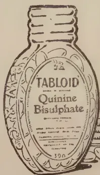

VOL. LXV.
PERADENIYA, NOVEMBER, 1925.
No. 5.
The sanction of the Legislative Council to the Ordinance providing for the establishment, incorporation and maintenance of a Research Institute for the Tea Industry of Ceylon marks another milestone in the path of agricultural progress.
For some years, those interested in the welfare of the tea industry of Ceylon has recognised the need for further provision for agricultural and industrial research. It has been a question as to how this could be best provided. The Government of Ceylon recognised that this additional research work was necessary and was naturally anxious to see that one of the staple industries of the colony from which the Government secured a proportion of its revenues should be adequately safeguarded against disaster.
It was felt however that the State could not be expected to provide all the funds which the industry stated it required in order to make adequate provision for its future welfare. The industry recognised that the application of the results of scientific research to the practice in the field was previously a duty of the industry to itself, as also was technological research into the manufacture of tea in the factory. The State on the other hand could not, in its own interests as well as in the interest of the industry, forgo its duty regarding the control of pests and diseases.
Pests and diseases can only satisfactorily be controlled when they become serious by means of whole-hearted co-operation and this can best be secured by means of legislation. The administrative working of such legislation must remain the duty of a Government department, and no State which depends
260[NOVEMBER, 1925.for a part of its revenue upon an industry could relegate its duties to an unofficial organization.
The provision therefore of a Research Institute supported by funds made available by the industry itself and managed by an Incorporated Board of Management nominated by that industry assures that technical and applied research will be available to meet the requirements of the industry. The co-operation of the Institute with Government is assured by two officials being ex-officio members of the Board and the information which the Department of Agriculture has already accumulated on certain aspects of the tea cultivation will be made available to it.
There are a number of important problems which require immediate attention. Field work in regard to certain pests and diseases have already been indicated and a fuller and more complete knowledge of the manuring of tea is an urgent requirement. The agriculture of tea cultivation requires a close study, as numerous chemical and physical problems of tea soils await investigation. Ceylon tea depends for its continued prosperity upon its quality and there is work for the technological chemist and the bacteriologist for many years.
It is also to be hoped that when the initial expenditure in regard to establishment of the Institute has been met that it will be in a position seriously to tackle the question of soil erosion on tea estates. Much is being attempted by estate authorities in this direction, but further data is required on many important points, and in view of the importance of soil erosion to the tea industry it is to be hoped that the Board of Management will keep it constantly in the forefront of their investigations.
The Tea Industry of Ceylon is an industry which has based its technical methods on slowly acquired practical experience. It now finds that before much further advance can be made there are problems of a fundamental character which require to be solved. These problems it now proposes to tackle and it is only by such research work that the future of the industry can be adequately safeguarded.
NOVEMBER, 1925.]261The following is a paper which Mr. H. C. Pinching, the Rubber Growers Association's Senior Scientific Officer, Malaya, prepared to read before the Planters' Conference held under the auspices of the Incorporated Society of Planters, at Kuala Lumpur on June 21st, 1925 :—
It is nearly fatuous for me to point out to you the importance of the soil factor in any agricultural pursuit. We sink our money, that is to say our capital, into the soil and trust that through the powers of that soil our capital will be returned with interest. We can liken our soil to a race-horse, the owner of which has plenty of money. He provides that horse with the finest equipment and houses it in the best of stables. At the race meeting he puts up the best jockey to ride that horse and yet, the success of the whole business really depends, not upon these things, but upon the qualities of the horse itself. So with a planting enterprise—the company may have plenty of money, it may provide the finest management possible, the equipment in the way of roads, buildings, factory and means of locomotion may be ideal and yet the success of the enterprise really depends mainly upon the fertility of the soil possessed by that company.
We could carry the racehorse analogy a little further. Say, the race-horse is not a good goer, but only a second rate animal ; under certain treatment and training one might eventually get it to develop into a somewhat passable racer ! Still, that certain treatment and training may cost so much as to remove the whole racing business with that horse from the realms of economics and make it merely a non-revenue-producing pastime. So with the soil ; provided that there was no restriction upon the amount of money I spent I could grow crops upon the most unfertile soil. Still that would remove the matter from the field of business where one wants the returns to exceed the expenditure.
Thus we see we need at the outset a soil with a fair modicum of natural fertility and suitability of condition and lie for the crop we desire to plant. You will say that such is obvious and is really hardly worthy of notice, for after all one wouldn't try to plant, say, rubber on a macadamised road. Yet, in spite of the obviousness of this we all know very well indeed that thousands of acres of land, nearly as unsuitable as a macadamised road for planting Hevea, have been planted up in the past, and even in more recent years the fertility factor has not been given the consideration it should have received in selecting land for Hevea. Of course, in the early days, it was the rush for the "quantity" rather than the "quality" of acres planted which accounted for the planting up of unsuitable areas. To-day it is often the idea of "finishing off the area" which is to blame. Any way, had I the money which has been spent on the planting up and maintenance of unsuitable lands, from which not one cent of profits has been received, I should not have to spend my time as a rubber scientist !
262[NOVEMBER, 1925]We have all seen such areas as these of which I speak. Ideal paddy land, rocky unfertile hills, undrainsable morasses and the like! We have probably all experienced the upkeep costs of such areas as these, how that the maintenance, weeding, re-supplying, not to mention efforts to improve the conditions, all cost double or treble that of dealing with the good areas and how that the returns, if any, have been very small. Often, after spending large sums to keep these "dud" areas in the acreage of the Estate, we have eventually abandoned them.
Presuming, therefore, that we have been fortunate enough to secure for our planting an area with a reasonable modicum of fertility it is up to us to
Let us consider the first point.
Why is it that we should have to take any measures to maintain the fertility of a soil, and how is it that a soil loses its fertility? In an ordinary arable land in temperate climates the taking of repeated crops is probably the main factor which is liable to impoverish the soil. In connection with a permanent cultivation such as rubber it cannot be so much what is taken from the soil by the trees which impoverishes the soil. I know that many planters speak of what rubber trees or weeds, even lalang, "take out of the soil." But what does the rubber tree "take out of the soil" in the matter of soil constituents? Further, it must be remembered that it is only the latex we take from an area—and that latex only contains about 15% of the mineral matter, i.e., an area giving 500 lb. per acre per annum loses mineral salts from the soil at the rate of 75 lb. per annum. The mineral matter contained in the leaves is put back into the soil when those leaves fall and decay. The mineral matter in the wood of the tree, for which I cannot give an accurate percentage figure, though I would suggest on an average it does not exceed 1%, is merely locked up and could be returned to the soil if the trees are burnt in situ when we have finished with them. Thus you will appreciate that the "taking out of the soil" by rubber is different from the "taking out of the soil" by the annual crops at Home (or even tapioca here) where one removed practically all the plant from the spot in which it was grown. Thus with corn at Home—only the stubble is burnt and its ash returned to the soil—the other parts, the straw, the grain, is taken away. In the tropics, however, other important factors also come into action and we must, if we wish to preserve the natural fertility of our soil, take steps to prevent or to negative the working of these factors. Let us consider for a moment what is commonly known as "virgin" land—as opposed to land which has already been under previous cultivation. What was the condition of that soil before we felled the jungle? We say that the soil was "protected" by a dense cover of vegetation. But from what did the dense cover of vegetation protect it? This brings us to the two main agents for robbing our freshly opened-up soil of its natural fertility. They are (1) Rains (2) Sun.
(1) The torrential tropical rains are prevented by the vegetation from beating upon the surface of the soil. Thus their scouring action is prevented. Further, the rain which falls to the ground through the branches, not only
NOVEMBER, 1925.]263has it lost its violence, but any tendency to soil movement, on account of its presence on the ground, is prevented by the roots of the vegetation. Since the rain loses its force when it comes into contact with the soil and as its free movement through the soil is hindered by the presence of roots, the leaching action of the rain on the soil, by which valuable soluble salts are removed, is largely reduced. Further, and this is the most important point for Planters to consider, one of the very important elements necessary to the fertility of the soil is nitrogen. This is taken up by the soil from the air and humus through the agency of organisms so long as the land is covered. The nitrogen, which is known as "fixed" nitrogen as it is held by these organisms in the soil is slowly converted into nitrites and nitrates, in which form it becomes soluble in water. This change, however, goes on much slower than the rate at which the nitrogen is taken up by the organisms, i.e. becomes "fixed," and hence the soil under cover gains in nitrogen content. As soon as the land is cleared and kept free from any cover this fixed nitrogen which has been stored up becomes converted into nitrites and nitrates and the fixation of further nitrogen ceases. Thus, as Russell puts it "Land in sod gains nitrogen, land in fallow gains nitrate." It must be remembered that the gain of nitrogen by the land in sod is a real gain but that the nitrate gain is not, since it is only caused by the change of the fixed nitrogen already present in the soil. These nitrates and nitrites are soluble in water and the solution is taken up by the young plants in our new clearing. Hence one often finds that in some young areas the young rubber plants make very excellent progress for the first few years but eventually the rate of growth seems to fall off. I have in mind a planting which at one year old was one of the best I have ever seen, but now the trees are five or six years old, the rate of growth appears to be nothing exceptional. What explanation can one find for this? Simply that when the land was first opened up the change from the fixed nitrogen to nitrates supplied the tree with an ample supply of valuable plant food. This change of nitrogen to nitrates continued to go on, but at a faster rate than the trees could take up the nitrates. What happened to the surplus nitrites and nitrates? They were leached out of the soil by the rain and lost. Eventually the supply of stored fixed nitrogen became considerably reduced and the supply of nitrates to the trees correspondingly fell off with the result that the rate of growth of the trees slackened. Had we kept our soil covered, then the change from "fixed" nitrogen to nitrates would have been slower and we should have prevented the useless and reckless dissipation of the nitrogen stored in the soil.
(2) Sun. The dense vegetation which covers the soil in jungle land protects the soil from the sterilising action of the sun. One often speaks of the purifying action of the sunlight—the same idea comes out in the name "Sunlight" soap—and we all have notions connecting the dark, that is, the lack of sunlight, with disease. This idea of the purifying action of the sunlight is based on the fact that direct sunlight has a very harmful effect upon micro-organisms.
Let us consider these points further in connection with our "virgin" land when opening up is completed. The rain comes down in torrents and washes our friable surface soil to lower levels. In this country the tin
264[NOVEMBER, 1925]miners are often condemned for the silting of the rivers, but it would seem, judging from the denuded nature of many areas under rubber, that Planters are also responsible to some extent. By the "wash" the lighter particles of the soil—which include humus and decaying organic matter, upon the presence of which the fertility of the soil depends—are carried down hill and we are left with the heavier mineral constituents. These eventually move downwards and we are ultimately left with the more compact and hard—but unfertile—subsoil.
Then there is the leaching action of the torrential rains. These rains absorb and remove certain soluble salts which we could well do with as nourishment for our plants. You are all well aware that this leaching action goes on and it is for this reason that the application of certain chemical manures to the soil (such as sodium nitrate) presents difficulties on account of the readiness with which this chemical is leached out of the soil by the rain and removed elsewhere. To make a detour for a moment in connection with this leaching action of the rains. You may, or may not, know that chemical analysis of the soils of Malaya, generally speaking, show that they are poor in calcium salts, that is to say they exhibit a high order of acidity. In the Chief Secretary's Annual Report for 1920, comments are made by the Director of Agriculture on this matter and he offers the following statement:—
"The conclusions arrived at by collating the results of soil analyses for rubber estates are recorded by the Director of Agriculture in the following terms:—
"It appears from the results of chemical analyses, that much of the soil now carrying rubber is exceedingly poor, and is losing its virginal fertility with such rapidity that artificial compensating elements must shortly be resorted to on a large scale. In many cases, not only is the surface soil being denuded of its plant nutrients more quickly than weathering can replenish the supply, but the underlying subsoil is in an unhealthy condition, and likely to become more so on account of the water table and the character of the subsoil water.
"No definite data have been obtained to show the actual relationship between soil acidity and rubber yields, but the high order of acidity exhibited by the majority of estate soils shows that an unhealthy condition for root development is the rule rather than the exception.
"In the connection with soil analyses for estates, it must be recorded that there is a lamentable lack of interest displayed by the planting community in the whole subject of soil investigation, and there appears to be no desire to improve soil conditions by following up analyses with experimental work or fertilisation."
Now in connection with this point it is interesting to note that of all the naturally occurring mineral salts in the soil, those of calcium are some of the most readily soluble. Russell in his book Soils and Manures in discussing soil losses, states, "The constituent removed in largest quantity is calcium carbonate, no less than 8 to 10 cwt. per acre of this being washed away each year at Rothamsted." Thus, in view of the manner
NOVEMBER, 1925.]265in which the land in Malaya has been opened up and dealt with in the past and in view of the heavy rains which fall upon it, I think it is safe to say that we are lucky rather than unfortunate in having to deal with a soil naturally poor in calcium salts. Had such salts been present, it is reasonable to believe, in view of the treatment meted out to the soil, that they would have been quickly removed.
You probably have all heard the old saying "lime and lime without manure will make both soils and farmer poor." Why is that so? For the simple reason that the addition of the lime to the soil renders by the formation of calcium salts, certain valuable constituents of the soil soluble. A certain amount of these soluble calcium salts is taken up by the crop (to its benefit, and the remainder is leached out of the soil by the rain water. A continuation of such a procedure simply means that the valuable constituents of the soil are wasted and eventually one reaches a stage when there are no more of these constituents in the soil to be acted on by the lime. At that stage the soil is unfertile. If we take 50 grams of soil and shake it up in 200 ccs. of water with 1 gram of quick lime, the resulting liquid will have a brownish yellow tinge and on analysis the liquid will be found to contain organic matter, potassium and other substances. These have been removed from the soil through the agency of the lime.
In spite of the fact that we are lucky in Malaya in having a soil poor in calcium salts, upon which Hevea appears to grow very satisfactorily, we must not lose sight of the fact that there is still a leaching out of the soil of other soluble constituents by the action of the rain water.
The next point we have to consider in connection with our virgin land is the action of the sun's rays upon it. We say that they have a sterilising action. Generally speaking this sterilising action is caused by the heat from the sun's rays. As you are all aware the soil is ordinarily inhabited by countless micro-organisms, bacteria, fungi, protozoa, algae and these play an important part in affecting the fertility of a soil. They bring about the transformation of vegetable and animal matter into a form in which plant life is capable of receiving as a food. They affect the soil both chemically and physically. Some of these organisms are injurious to the growing plants—Rubber Planters need no reminding of the various root diseases which affect the rubber tree due to the presence of harmful fungi in the soil. There are, however, beneficial micro-organisms and it is with these we are now concerned. Any conditions set up in a soil which tend to destroy these must then be inimical to its fertility. This soil population is at a maximum a little below the surface of the top soil and from this point downwards it gradually diminishes until a depth is reached at which it practically disappears. The depth to which this population exists depends upon the conditions prevailing there. The life and extent of these micro-organisms are affected by and depend upon several factors, viz., temperature, moisture, food, aeration, and reaction of soil. Let us consider these factors briefly :—
(1) Temperature. These micro-organisms are most active between 65°—95°F. As the temperature increases this activity diminishes and at 130°F to 140°F action ceases and many are killed off. Take the case of our newly opened up "virgin" soil. Often our virgin soil is dark in colour,
266[NOVEMBER, 1925]on account of the presence of considerable quantities of organic matter, i.e. it is rich in humus. Being dark in colour the soil absorbs heat faster than if it were light coloured and during the middle of the day its temperature is often raised to where it is unshielded. The micro-organisms find these conditions unfavourable and either they die off or descend to lower levels where other conditions (air supply) may be unsuitable. Hence, by excessive heat, the development of these micro-organisms is hindered and the soil decreases in fertility.
(2) Food. Organic food is a very important food for practically all these micro-organisms and hence the state of the virgin soil is highly suitable for their development and spread. That means that, given an opportunity, these micro-organisms are waiting to improve the fertility of our virgin soil.
(3) Moisture. Bacterial activity almost ceases in a dry soil. Thus the desiccating action of the sun, such as is experienced in uncovered new clearings renders the top layers unfavourable to their development. The nature of the soil, itself, will be a factor deciding to what extent desiccation takes place. Soils rich in humus hold up water more than light sandy soils.
(4) Aeration. Bacteria are divided into two general classes, aerobic and anaerobic. The former require oxygen (i.e. air) for their growth and development, the latter only exist where no oxygen is present. By driving the air out of the soil we can change the nature of the micro-organisms living in the soil. Thus, supposing the land is flooded for a length of time, the water penetrates into the small interstices of the soil and drives out the air. The aerobic micro-organisms die and new kinds of micro-organisms which do not require air develop and thrive. The efficient aeration of the soil is a matter of prime importance to the agriculturist. One of the most important works of bacteria in the soil is to convert the nitrogen in the soil, which is derived from organic matter and from the soil air, into some soluble form (usually nitrates) in which it can be absorbed by the plants. Now, the micro-organisms which carry out this work of nitrification require air (oxygen) for their growth so that when no oxygen is present no nitrates are formed. Micro-organisms which can live without oxygen then commence to work and they undo just what the others had done, that is to say, they convert the nitrates and other nitrogen compounds in the soil into gaseous nitrogen, which escapes into the air.
(5) Reaction. Very acid soils are not favourable to the work of bacteria. Thus in the case of the nitrifying bacteria; these produce nitrous and nitric acids which increase the acidity of the soil and tend to hinder their own development. If a base was present, such as lime, this would combine with these acids to produce salts and the soil would thus be kept freer from free acids and the work of the nitrifying micro-organisms would be unhindered.
Time forbids me going at great length into the important functions of the soil micro-organisms and the part they play in maintaining the fertility of the soil. The subject is a difficult one and much is yet not understood of their workings. Still the little I have said should be sufficient to impress you with their work and be a basis for our further deduction obtained from considering the fertility of our soils.
NOVEMBER, 1925.]267We thus see that when we open up virgin lands for the cultivation of different crops we place the soil under conditions differing considerably from those under which it existed when it was covered with jungle. It is through these changes in conditions that we run the risk of lowering the fertility of that soil. Estate managements are slowly awakening to the possibility of this lowering of the fertility and what it means in the long run to the growth, development and yields of the trees.
Exactly what one can do and should do must depend to a large extent upon two factors:—
In the first place one must be all out to prevent the drift of the soil and that can be done by one, or a combination of some of, the following:—
By all these the power of the rain to carry to lower levels the particles of soil is more or less broken. On a slightly undulating land the employment of cover plants is usually sufficient to prevent "wash." The question of what cover plant should be used, or is best, is often put to me by planters. My answer is always "The best cover plant is that which (1) does the work I want to do; (2) can be properly established and maintained at the cheapest cost." I, personally, think it is extremely unwise to be prejudiced in favour of any one cover plant, say mimosa, vigna or centrosema. I have known cases, and undoubtedly you have too, where definite instructions have been given to the manager of an estate, often by those in authority at Home, to establish this, that or some other cover plant. After struggling hard to get the plants to grow, the manager has been rewarded with a very few weary looking plants dotted over the fields. Certain Visiting Agents are inclined to push one cover plant on all the estates they visit, irrespective of the class of soil. They appear to forget that some cover plants grow well and quickly form a cover on some kinds of soil, while on other soils they will only grow with difficulty. I shall never forget the difficulty I had to establish a satisfactory covering of Centrosema on a light sandy soil. I would suggest that it is advisable to try experimentally little patches with the different cover plants available, as soon as an area is opened up, and to find out thereby which plant is best suited to the soil conditions. Another point I would like to mention is that some planters appear to scorn local, can I call them indigenous plants, which often would grow luxuriantly and quickly, and to favour imported cover plants. Some planters put a lot of emphasis on the use of leguminous plants for cover plants. We all know that such plants add nitrogen to the soil and thereby raise its fertility and hence we all will agree that these plants are very desirable as cover plants. Yet the main object we have in view at the moment in our newly opened land is the conservation of soil and the prevention of "wash." If I can get a leguminous plant to quickly cover the
268[NOVEMBER, 1925.soil, and thereby I kill two birds with one stone—prevention of wash and an improved chance of increasing the fertility—all the better. Still if I cannot get the leguminous cover plant to quickly establish on my land, then I prefer to grow a non-leguminous one which will do so, rather than spend a lot of money and time coaxing the leguminous plants into existence. During the time I am coaxing on the leguminous plant, heavy “wash” may be going on, so that what I gain eventually by the soil improving work of the leguminous plants may be more than negatived by the early “wash” which occurs. Perhaps all this is not absolutely scientific advice—but speaking from the practical point of view, it is my opinion based on my knowledge of rubber planting. Still, it is not my purpose now to discuss the relative value of different cover plants available to estates or the methods of establishing them, if further information, or rather an expression of my views—for as far as I know no results are available showing in undeniable terms the relative values of these cover plants—is desired on this matter, I shall be pleased to give it at the end of my paper.
Where land is more undulating, then, usually, a cover crop is not sufficient to prevent the drift of the surface soil to lower levels. This brings us to the questions of silt pits, terraces, contour drains and other artifices to produce a discontinuation or break in the slope of the land and which have for their purpose the checking of soil movement. As you are all aware “silt pits” are now extremely popular on estates for the purpose of stopping “wash.” As soon as a discussion is commenced on silt pits, the subject generally comes round to the question of “Where do you put the excavated soil?” This is undoubtedly an important question and I should like to put my views before you on it. I have here a report of a lecture by Mr. R. M. Richards of the M. P. A. A. and in it is stated as follows :—
“Mr. Richards . . . ably disposed of the fallacy that earth excavated from contour drains should be placed on their lower side.” Of course, as I was not at the meeting at which Mr. Richards delivered his lecture I do not know exactly what he said, and, possibly some important remarks in connection with this statement, which would have considerably modified its meaning, may have been omitted in the Press report. Still, to take the statement as it stands, in my opinion, it is far too sweeping and dogmatic. In my opinion, circumstances alter cases and we want to know all particulars of the lie of land, nature of the soil and, what is most important, the object of the silt pitting, before we are in a position to judge fairly. Now to some people, silt pitting is merely—well, silt pitting—that is digging holes in the ground, because it is the apparently fashionable thing to do. No distinction is made, and I want you to take special notice of this, between silt pitting in young rubber and in old rubber. In my opinion this is most important for the very object of the work differs in each case. We are all agreed that the main object of silt pitting in newly opened land, or shall we say, young rubber, is to stop wash, but surely that is not the reason for silt pitting in old rubber where the surface soil is already lost and gone years ago. I don’t want to dilate on this old rubber question for the moment but will deal with that when we consider the areas already many years under Hevea. Considering only newly opened land, then, I would suggest, that, as far as possible (and there is much in that proviso), its
NOVEMBER, 1925.]269desirable to bank up the soil on the top of the pit. I am out to break the force of the water and these upper bunds will give that result. Certainly some of the soil from the bund will fall back into the pit, but if I can quickly establish a cover plant on the bunds to strengthen them, the loss will be little and I can clean them out eventually. I can hear some planters saying "Oh yes, that is very nice indeed, but what about my loose sandy soil with which I have to deal? It is for such cases I took great care to put in the proviso "As far as possible." We all know that on some soils, if we dug silt pits and banked the earth on the upper side, the pits would be filled after a day or so and that before we could anything like establish a cover crop on the bunds. In such cases, I am afraid, nothing remains but to put the soil on the lower side and get the area covered with a cover plant as quickly as possible. After all, a whole loaf (that is to say the stopping of all downward movement of soil) is nice, but a half loaf is better than none when the whole loaf is obtainable. I would like to emphasise the use of both silt pits and cover crops on young areas. The use of silt pits alone is expensive if one is really going to make them stop wash. Repeated cleaning out or remaking may cost up to $10 per annum and even then the drift of soil is not prevented.
Contour drains come under a similar category as silt pits and so call for no special discussion. A passing note, I would like to make, with reference to "Terrace planting," in which properly laid out terraces are cut out of the side of the hill before planting is carried out and the young trees planted along those terraces? I have an objection to this procedure on the score that one thereby removes the surface soil carefully and places the plants on subsoil.
With reference to steeply inclined land I consider that a system of silt pits and low creeping cover plant are advisable at the outset of planting and that eventually Tephrosia candida or some similar shrubby cover plant should be planted in contour and that from this, by cutting down the plants periodically and placing the cuttings behind the plants, to build up a system of terraces. Really, of course, none of us are keen on planting such steep land but often the planter has no choice in the matter and merely has to make the best of it. Without saying much for it on the score of effectivity, the method of contour weeding is a cheap way of building up contour terraces.
We have now dealt more or less briefly with the maintenance of the natural fertility of our newly opened land and we must now pass to the second part of our programme, i.e., the raising of the natural fertility level of the soil at our disposal. In much of the land which has been opened up with Hevea in Malaya it would seem, to judge from results, that the natural fertility of the soil is sufficient to secure a good growth of Hevea brasiliensis and that steps to effect any improvement in this fertility are not particularly called for. Still, we will all agree in hoping that an improvement in soil conditions would result in an improved growth, an increased girth and increased yield from our trees.
The principal step we can take in improving the soil conditions and thereby to raise its fertility is by improving its physical condition. This
270[NOVEMBER, 1925.improvement in the physical condition of the soil can be secured by :—
The physical condition of the soil is as important a factor in deciding the plant growing powers of a soil as the chemical composition (i.e., the presence of actual plant foods) of that soil. It is possible to have a soil extremely rich in plant food, in which it is impossible to grow any plant owing to the unsuitability of the physical condition of that soil.
Let us briefly consider the chief means we have of improving the physical condition of our soil, viz., cultivation. There is no need for me to tell you that the object of cultivation is to get the soil into a good "tilth" or texture, i.e., to get it to assume a nice crumbly condition. Experience has shown that such a condition of the soil is best suited to the growth of plants. One of the most dominating substances in the soil, and one which confers its own properties to a considerable extent upon the soil is the clay. Clay can exist in two states, a sticky and a crumbly state. Any soil which contains more than about 10 per cent. of clay may thus appear in two very different guises—either in a nice crumbly condition with a fine tilth or in a sticky condition, after a spell of wet weather, which dries into hard clods in dry weather. The first object of the cultivation is therefore that the clay in the soil shall be maintained in the crumbly condition.
The cultivation of the soil under certain climatic conditions (by which the soil "weathers") causes the surface of the soil to be raised. In one experiment the mean level of the soil was raised three inches as a result of cultivation. This raising of the surface by cultivation means that there are more spaces between the particles forming the soil, and, as you are aware, the amount of pore spaces in a soil determines the amount of air and water contained in that soil. This increased porosity of the soil due to the cultivation may be, in the case of certain soils which are naturally porous, to such an extent as to be detrimental. This is then overcome by rolling until the desired compactness of the particles is obtained. In the tropics, however, the weathering of the soil, resulting in increased porosity, which is the outcome of the temperature and climatic changes, is not so great as at Home and hence there is very little risk of excessive porosity resulting from cultivation.
Usually money is not, or has not been, available for the carrying out of any extensive cultivation scheme on new areas planted or to be planted with Hevea. And, further, the undulating nature of many estates makes such work risky on the score of encouraging "wash." Still, there are flat areas, I know of, which have been continuously lightly cultivated for four or five years after planting up, with tractor and plough or harrow (avenue planting) with good results. Again, with cultivation, as with many other of the methods we adopt on rubber estates, we have to take other factors into consideration. I have in mind at this moment an estate I visited where there was an area in which the depth of surface soil varied from 6 ins. to 1 foot and this was underlain by a stratum of hard rock. Here a yearly chancolling had been carried out for some years. What were the results?
NOVEMBER, 1925.]271The trees had only these few inches of soil in which to push their roots and every year these roots were well chopped up. With reference to cultivation one often hears the remark that cultivation makes the roots go lower into the soil. That result is often obtained from cultivation provided that the lower levels are suitable as a habitation for the roots or that the roots can penetrate such layers. Several areas under Hevea exist in this country where the roots are restricted to the top 6 inches and they refuse to penetrate any lower on account of its uncongenial nature. In such cases, as years go on the growth of the trees gets less and less and the trees gradually look poorer and poorer, though for the first few years they may have made quite a rapid and good growth.
Thus I would emphasise to you that one man's meat may be another man's poison and that though cultivation in general may be an excellent thing, in certain soils, with a permanent crop such as Hevea, it may be harmful. One must take all factors into consideration.
A passing word on drainage. As the word indicates, drainage means that water is removed from the soil, but to the planter that is not all. As the water is drained out, the air is drawn in and the aeration of the soil as a sequence to the removal of surplus and unrequired water from the soil is a great boon, for the condition of the soil is thereby improved. I have already dealt with the micro-organisms in the soil and you will remember that I stated that these micro-organisms need a sufficient supply of air (that is oxygen) for carrying out their activities. Increase their supply of air and you increase their activities.
Before finishing the subject of drainage I would like to mention the use of "scupper" drains on heavy clayey soils. These drains, about a changcol deep and a changcol wide, have a great power of improving the top layers of the soil. They do not take the place of the ordinary deep "drainage" drains, but in low lying places one often finds that even with efficient drainage, i.e., the drains are capable of removing surface water during rains, yet the surface of the soil remains slimy and sticky for days after the rains have finished. These surface drains have been used with benefit on several estates that I know and I feel sure that the non-continuance of the sticky nature of the surface layers, must tend towards an increased aeration and soil improvement of the top layers. In connection with drainage, especially on lands where the subsoil is a heavy clay, I would like to make a passing reference to the matter of the placing of the excavated soil in making drains. I have seen cases where the soil from the drains has been banked up in such a way as to make a basin of the land so that the water stands on the drained patch for days after the rain has ceased and it can only disappear either via the soil, through which on account of the heavy nature, it percolates but slowly, or by evaporation. I would suggest that the placing of the soil in drain making should be done in such a manner as not to form these "basins."
I have already said something about cover plants while discussing the question of the maintenance of the natural fertility of the soil. Now we want to look at them for a moment as agents for improving that natural fertility. As I have already stated leguminous plants, such
272[NOVEMBER, 1925.as Centrosema, Vigna, Mimosa and the like, add nitrogen to the soil. On their roots are little nodules in which bacteria live. These bacteria have the power of withdrawing and storing up the nitrogen from the air in the pores of the soil. This nitrogen goes into the construction of the plant and, when the plant decays, finds its way into the soil. It is for this reason that one prefers to use a leguminous plant for a cover plant. At the same time, however, one must remember that the value of a cover plant is not confined solely to the power of adding nitrogen to the soil. Thus, in what is known as "green manuring," though it is customary to use leguminous plants, the essential feature is the addition of organic matter to the soil. On this score non-leguminous plants are equally valuable with leguminous. This vegetable matter mixes with the soil and not only adds actual plant food to the soil but it also improves the physical condition of that soil. Amongst other things this additional humus improves the texture or tilth of the soil and confers upon it greater power for retaining moisture. There is one point in connection with cover plants and green manures which needs emphasis. It is often apparently assumed by planters that the mere planting of the leguminous cover plant effects the manurial benefits of those plants to the soil. It is only when the plants are dead and their remains buried and mixed with the soil that the full manurial benefits are received. Certainly the living plants do confer some benefits to the soil. Their roots tend to open up and aerate the soil. As you are possibly aware air is a bad conductor of heat and thus where the surface soil is in a state of good tilth, i.e., where there are plenty of air spaces or pores between the particles then it delays the heating action of the sun's rays from affecting the lower levels of the soil. Thus the opening up effect of the roots of the cover plants tend to keep the soil cool. Similarly the shading of the surface of the soil by the leaves of the cover plant has a similar effect. You will remember in connection with this heat factor the activity of the micro-organisms in the soil.
In connection with cover plants there are some erroneous ideas current with reference to their effect upon the water content of the soil and the rate of loss of that water. It has been thought by some that since the cover plant shades the soil from the direct rays of the sun that the loss of water from the soil by evaporation is thereby diminished. This is highly probable, but one must also take into consideration the loss of water from the soil by the process of transpiration by the leaves of the plants. Experiments have shown that the water lost on account of the transpiration by the leaves is more than that saved in the soil on account of the shading action of the weeds and hence the net result of the growing cover plant to the soil is to reduce its water content. Keiller in Rutherford's Planter's Note Book gives some very interesting figures in connection with this point. He states:—
"It is not infrequently stated that growing grass and weeds prevent loss of soil moisture by forming a mulch to shade the surface. This is not the case. A grass grown soil loses moisture more rapidly than a clean weeded cultivated soil, the loss by transpiration of the growing grass more than exceeding the gain through any shading of the surface. In the
NOVEMBER, 1925.]273following table are given some figures of soil moisture at different depths in a clean weeded and grass grown plot respectively. The two plots adjoined one another and the points of sampling were less than 20 feet apart. No rain had fallen for 27 days previous to sampling.
| Cultivated. | Grass grown. | |
|---|---|---|
| Moisture in surface inch | 98 % | 1.81 % |
| " 6 in. below surface | 8.58 % | 5.57 % |
| " 12 " " " | 9.74 % | 6.78 % |
| " 24 " " " | 9.91 % | 6.42 % |
Dead grass lying upon the surface is an effective mulch, but growing grass is not."
Usually, however, for Malayan soils which experience a fairly continuous rainfall throughout the year this matter is not of very great importance. In countries which experience regular long periods of drought it has, however, to be considered.
With reference to the maintenance of the moist condition of the soil I would like to refer, in passing, to the criticism which was levelled at me some time ago in a letter in the Planter and which stated that the leaving of jungle timber in new clearings resulted in an improvement in the growth of the young trees, as compared with young trees growing on areas from which all jungle timber had been removed. If such an improvement does occur, I would suggest that it is due to the fact that the jungle timber helps to maintain the soil in a moister and cooler condition.
With reference to cultivation I find that I have omitted one important point, which, however, fits well in here with our thoughts upon the maintenance of the moist condition of the soil. As you are aware water can be present in the soil in two types; (1) Free water which obeys the laws of gravitation and percolates through the soil to lower levels; (2) Water kept around the particles by surface tension. This latter water which is a thin film around the particles can only be got rid of by evaporation. When the soil is air-dried there still remains a certain amount of moisture which is known as "Hygroscopic moisture." We can thus arrange our soil in layers as follows:—
When an exposed surface of soil is left untouched for some time so that it receives the heat of the sun's rays, the particles of the soil appear to arrange themselves so that continuous channels are formed from layer 2 to layer 1 and the surface water on the particles of layer 2 thereby becomes evaporated and lost. Similarly light showers which fall during a long spell of dry weather may do more harm than good by penetrating the surface soil as deep as layer 2 and thereby joining layers 1 and 2 so that the surface water from the particles in layer 2 is lost by evaporation. The power to hold water depends upon the nature of the soil. Soils rich in organic matter (humus) have a greater power for holding surface water than sandy soils. Further, such soils have a power to raise water from
274[NOVEMBER, 1925.lower depths, so that they can draw upon the reserves existing at lower levels. We have all seen on our estates that sand has very little power for raising water from lower levels for often one can see sandy patches dry and incapable of growing plants where the water level is but a few inches under the surface.
It will now be appreciated how the cultivation of the soil prevents the loss of moisture. The continuous channels from layer 1 to layer 2 are interrupted and therefore evaporation of the water in layer 2 prevented. In a fertile soil which is repeatedly turned over during a spell of very dry weather the moisture content is maintained sufficient for the plants, as any loss by evaporation is made up by the soil's power of drawing up water from lower levels. The following table shows the effect of cultivation upon the moisture content of the soil.
| Cultivated Soil. | Road. | |
|---|---|---|
| Moisture in surface inch | 1.10% | 4.92% |
| „ 6 in. below surface | 10.65% | 11.71% |
| „ 12 „ „ „ | 13.20% | 10.96% |
| „ 24 „ „ „ | 13.37% | 10.24% |
Thus we see that a fine layer of soil on the surface effectually shields the rest of the soil from the sun's heat and keeps the moisture safe from loss. The constant use of the hoe in the garden reduces considerably the need for artificial watering and many a gardener will declare that the hoe is the best watering-can. In countries which experience particularly long spells of dry weather or a very low rainfall every year, then this point gains considerably in importance. Here disc-harrows are put through the soil as soon as a shower of rain has fallen and before the soil has had time to dry up again. This is the fundamental idea in the practice known as "Dry Farming."
The last point which I have to mention under the subject of means of improving our virgin soil is the use of manures. I regret to say that I have no information to give you on this matter. When estates can get 600 lb. of rubber per acre without manuring I am afraid it will take some very conclusive proofs, showing the advantages to be obtained from manuring before rubber companies are likely to adopt such a procedure. Still it would be extremely interesting to try this experimentally to see what could be expected from such work. Probably when the new Institute for Rubber Research gets into operation attention will be paid to such problems.
I have now more or less completed the subject of the preservation and improvement of the fertility of our freshly opened areas. We must now consider for a brief moment the land already under Hevea for many years. I know that many of you will think that this is a far more important matter than the care of newly opened lands since there is not much land now being opened up for rubber and there are many acres of land under old rubber which are a source of anxiety to those under whose charge they are. Still I believe in getting down to first principles and much that we have discussed in the earlier part of this paper will help us in dealing with, and understanding how to deal with our old areas,
NOVEMBER, 1925.]275Through the action of the sun, the results of the "wash" due to the torrential rains, ably assisted by the rigid clean weeding programmes which have been carried out in the past, many old estates are now left with an unfertile hard subsoil upon which the trees have to exist. In some cases cultivation, previous to the planting of the rubber, such as tapioca, pine-apples and gambier, left the soil in a poor condition before the rubber was planted. It is not only what these crops took out of the soil, but the repeated chancollings loosened the soil and assisted "wash." Further, leaving bare the soil after cultivation accelerated the change of the fixed nitrogen which occurred in the soil, into soluble nitrates and these were quickly leached out of the soil by the rain-water. Thus many estates started operations on an impoverished soil and subsequent treatment of that soil merely made matters worse. Areas such as these are common in Malaya. The growth of the trees is practically at a standstill—their root systems have reached practically the end of their possible development. The cessation of root growth is reflected in the poor crown development with the characteristic "stag-horn" leafless branch formation and there is practically a standstill in bark renewal. What can we do in such cases to improve the growth of the trees? The treatment of the trees, themselves, is useless. The cutting off of the dead branches will not give an improved crown development—the scraping of the renewing bark and painting the scraped surfaces with cow dung mixtures will not improve the bark renewal. A certain Visiting Agent who was trying this bark scraping stunt replied to me when I queried the utility of his efforts, "But I must do something to improve matters." Well, gentlemen the only chance you have to get that improvement in crown development, in bark renewal and in general condition of the tree is to improve the soil conditions. To what extent an improvement in soil conditions can produce such improvements in the trees must depend upon the state of the trees. It would seem that in some cases trees have got into such a "rut" that it is nearly impossible to coax them to give a response to any improvement in soil conditions. In such cases it would seem wiser from a financial standpoint to cut one's losses and write "finished" against the area. The upkeep of such an area will be practically nil; there will be no fear of the land becoming over ridden with weeds and all that is necessary is to keep an eye on lalang. If rubber continues to make such upward strides in market price as it has in the last month such an area might pay to tap.
Still, viewing the matter generally, on what lines shall we work to improve soil conditions? The three ways open to us are:—
All these points are necessarily closely connected. Let us take them one by one.
(1) As we have already stated, on many of our older hilly areas under Hevea, our surface soil has been removed by "wash" and we are left now with an unfertile subsoil which is nearly impervious to water. The major portion of the rain which falls upon this "subsoil" runs over the surface
276[NOVEMBER, 1925.and but a small portion finds its way into the soil and becomes usable by the trees. To force the water to pass through the soil instead of over the surface we construct traps on the hillsides to prevent the water running unhindered and uninterrupted over the surface of the land. These traps can take the form of silt pits, contour drains and the like.
The exact form which these traps should take is, in my opinion, a somewhat minor detail. The thing, in my opinion, which is of prime importance is the efficiency of the artifice to do what I want it to do. I would suggest that exactly what form is desirable must depend upon the nature and lie of the land being dealt with and the cost of the work. Not long ago I was visiting a certain estate and I noted that the manager had cut on a somewhat slightly undulating area under oldish rubber shelves or small separate terraces to force the water into the soil. When I noted them, the manager remarked "Of course you do not approve of these." When I asked why he presumed I didn't approve of them, he replied, "I thought you would certainly prefer silt pits!" My answer to that was, "why should I prefer silt pits, are these artifices doing what you want them to?" The efficiency—the result—is the main thing to judge by.
The most common artifice employed on old areas for forcing rain water through the soil is the silt pit and this brings us once again to the popular question of where should I put my excavated soil. What am I out for? To catch water? Then I would suggest that this can be best effected by having the excavated soil placed at the lower side of the pit. I feel sure you must appreciate the difference in the object in silt pitting old areas where all surface soil has been lost for years and silt pitting newly opened land where I am out all the way to prevent wash. I have heard planters talk about the "wash" staying benefits of silt pits in old worn-away areas and have had them point out with great joy a little covering of silt in the bottom of their pits. Quite a case of the well known tobacco trade mark "See what we save!" Still, gentlemen, I would suggest that though it is very nice to save further wash from the area, it is really a minor detail in comparison with the forcing of the water through the soil.
(2) This brings us to the second thing on our programme, viz., the improvement of the physical condition of the soil. The forcing of the water through the soil by the power of gravity will cause air to follow and this aeration of the hard exposed subsoil layer should tend to improve its physical condition and also make it more congenial to the development of micro-organisms. What I have already said about silt pits rather refers to the undulating areas but we have also flat areas to consider. We have flat areas where the soil conditions are uncongenial, where the texture of the soil is unsuitable to rubber. I saw a case of this not long ago where the Board of the company had instructed the manager to uproot the trees and replant! I naturally inquired of the manager what he was going to do to the soil before carrying out the replanting. With the present stand of trees as an object lesson as to the results of growing Hevea on the soil in question I could not see what hopes there were for a successful issue from the second planting. The reply was "nothing." Before such a soil was fit for replanting it wanted, in my opinion, considerable treatment. The treatment I would have suggested would have been a programme of cultivation, drainage, cover crops which wanted to be dug into the soil every year.
NOVEMBER, 1925.]277Three years' working on the soil in this way should have done something to have converted the area into a place fit for having a second planting.
Of course such a programme as this could not be done with the trees standing and as we have to deal with old areas under Hevea we have to modify our procedure accordingly. Take the first thing I suggested, viz "cultivation." Though I have done a considerable amount of cultivation by chancolling (either with chancols or forks) of old rubber I cannot say that I approve of it when considering the results of that work. In the first place one damages so many roots and this must have some effect upon the tree, secondly the damage one does to the roots opens the roots to attack by such a fungus as Ustulina zonata and thirdly I have never seen any marked improvement either in growth of the trees or their yields resulting from such work. I do not deny the possibility of the cultivation improving the soil, but it would seem that the other counter-results more than neutralise the benefits. I saw an interesting case the other day where in a fairly flat field of oldish trees the roots of the trees were considerably exposed. Other fields of a similar age and adjoining this field did not show this root exposure. Upon inquiring of the manager I found that the field in which the roots were considerably exposed had been cultivated—the others had not. It would seem that the cultivation had permitted "wash" to occur and so the roots were left above the surface.
In view of the above objections which I have raised against cultivation in old rubber, I would suggest that attempts at the improvement of the physical condition of the soil can only be restricted to efforts to improve the aeration by improved drainage, by silt pits and surface drains by which the water in the surface layers of the soil will move quicker. Again, with reference to the subject of silt pits in old rubber, one finds that they may eventually get filled up with leaves, silt and other debris. The question then arises as to whether it is better to dig other fresh pits or to clean out the old ones. In this I would suggest that the peculiar circumstances of the case must be considered. We all appreciate the fact that the digging of silt pits in old rubber in most cases results in a considerable cutting and severing of valuable roots and that the digging of more silt pits means more damage to the roots. Hence, except in very wide planting where the new silt pits would mean very little damage to the roots, I would suggest that it is better to clean out the old pits. But some planters will ask "What about the many little rootlets which one finds at the bottom of the silt pits feeding upon the debris there?" I am fully aware that the little rootlets do find their way quickly into the silt pits, but why do they do it?
Some will say that the organic matter (dead leaves, etc.) encourages their development there. I would suggest, however, that they grow there merely on account of the increased dampness present there and that to damage these rootlets is of far less consequence than the damaging of main roots. Rootlets are quickly formed by the tree at nearly any portion kept extra damp. Indeed you can get rootlets to grow on the stem—that is the method used in obtaining marcots. It is the dampness which encourages this rootlet formation not the presence of organic food supplies. Indeed you can place a piece of board on the ground for a few days near a tree and on removing the board you will see the surface of the soil full of small rootlets
278[NOVEMBER, 1925.due to the fact that the board has kept the surface extra moist. I have heard of cases where old trees have been isolated on account of the repeated digging of silt pits around them, more or less all their lateral roots being severed six feet or so from the trunk. I cannot see how such treatment can fail to impoverish the tree and retard its growth.
We must hastily turn to the last item in our programme, that is the restocking of the soil with plant food. The term "manuring" is now used to mean this addition of plant foods to the soil, though it is interesting to note in passing that this term originally meant to "cultivate" or dig the soil, from the old French manoeuvrer, to work by hand. Defoe uses the word in this sense in Robinson Crusoe.
Two kinds of manures can be employed, viz., green manures and chemical manures. We have already discussed at some length the use of green manures in improving both the physical condition of the soil and also the way such manures add plant food to the soil. The difficulty on many old areas under Hevea, especially those areas which most of all require improvement, is to establish a green manure cover plant, on account of the unfertile nature of the soil. In many of such instances weeds refuse satisfactorily to grow so it is little wonder that the cover plant does not become established. The scraping of the surface soil into ridges and the planting of the cover plant in the ridges has been more or less successful in some cases. By allowing such weeds as will grow to grow for a year or so and then weeding the area the organic matter thereby added to the soil may improve matters and the cover plant then planted may grow more or less satisfactorily. Further the shade is often a stopper to the satisfactory growing of cover plants. Vigna appears to withstand a good deal of shade but as it requires comparatively good soil it is generally of little use on the washed out soils one is so desirous of improving. I am afraid that very little tangible good to the standing trees can be expected from the use of green manures on old worn out soils. Their action is very slow and I am afraid insufficient to stir many of the old trees from their lethargy. You may have read how that the using of green manures on the H.A.P.M. gave negligible results. From these remarks I do not wish you to gather that green manures do not improve the soil. They undoubtedly must improve the soil, but the improvement is so gradual that year by year it is not able to bear any noticeable effect upon the trees. It is probable that the use of farm yard manure would have better and quicker results but unfortunately this manure is not available.
It would appear therefore that we are thrown on to chemical manures if we want any quick effects. Some of you may have read my remarks upon this matter which were given in the Rubber Growers' Association Bulletin for February. Unfortunately we have very little data available from which to assess the value of chemical manures to rubber growers. We know that on a certain class of soil in Sumatra the H.A.P.M. were able to increase the yield of the trees by 106% by employing sodium nitrate and ammonium sulphate as manures. While this indicates the possible effects of manuring with chemicals upon the output it by no means allows one to advise the use of these manures on all estates. Different soils will require different treatments. This was well shown by the H.A.P.M., for on their red soil areas these manures produced no marked results. If estates
NOVEMBER, 1925.]279with poor areas contemplate carrying out manuring with chemical manures it is absolutely imperative that different manures are tried experimentally first. Such experiments must be properly conducted with control unmanured areas. It is only from the results of actual experiments that one would be justified in manuring large areas.
In connection with these efforts to improve these old areas, the crux of the matter, in my opinion, must be "Results versus Costs." Unfortunately we have very little accurate data to work on. On first principles it would seem that such steps as, say, "silt pitting" should improve the soil, but I have yet to see the carefully compiled results from any estate showing to what extent any improvement in growth, yield, etc., has been produced by this work. Many of us "think" what an improvement is caused by silt pitting. We think we note an improved appearance of the trees. Still gentlemen, it is time, I would suggest, that we got into closer touch with these problems and attempted to secure more accurate data. Knowledge is power and without that knowledge we can flounder about for years spending large sums of money upon work from which we get no return or at least returns not commensurate with the outlay.
This, gentlemen, brings me to the end of my paper. I do not offer these remarks as being of a highly scientific nature, indeed they are extremely commonplace. Still if I have only stimulated your interest in the urgent soil problems which confront the rubber growing industry, indeed all tropical agricultural industries, I shall feel that the time we have spent here this morning has not been wasted. I may not have brought to you any startling fresh information and possibly you disagree with the views I have expressed. If so, all the better, for you will now set yourself to prove matters and see who is correct.—The Bulletin of the Rubber Growers' Association, Vol. VII, Nos. 7 and 8.
F. G. SPRING, N.D.A., U.D.A., F.L.S.,
Agriculturist (Rubber), Department of Agriculture, S.S. & F.M.S.
This article is based on the results of tapping experiments carried out on numerous rubber estates throughout the Peninsula, results of which were kindly supplied to the Department of Agriculture.
The writer is not familiar with the conditions under which the experiments were conducted and cannot therefore make any comment as to the accuracy of the results. Unfortunately little information was given in respect of many of the tests and in several instances the results had to be omitted owing to the absence of sufficient data.
Tapping experiments require special knowledge in their preparation and a high standard of supervision. It is not proposed here, however, to deal with the principles which should govern field tests with the rubber tree but merely to draw attention to the fact that there are many problems to be considered since so many factors have a direct influence on the yield
280[NOVEMBER, 1925.of latex. If any estate manager contemplates conducting tapping experiments it is advisable that he should first consult the Department of Agriculture.
The following comments were made on the results obtained on six estates.
Estate 1.—"The best yielding period is from October to the middle of February. The crop, during the wintering season, decreases to a greater extent on flat land than on undulating land."
Estate 2.—"The crops steadily fall off from March and do not recover until the trees have put on fresh foliage, which is usually during the month of June. Should a period of drought be experienced the yields will be affected, provided the duration of the drought is sufficiently long, say two weeks."
Estate 3.—"The best yielding month is December"
"The poorest yielding month is April."
Estate 4.—"There is less falling off in yield due to wintering with alternate day tapping as compared with daily."
Estate 5.—"The harvests generally begin to fall away, owing to leaf change (wintering) about the middle of February until the crop reaches its lowest point towards the end of March. Two or three weeks later, a slight increase in crop is noticed and this increase is generally steadily maintained until the crop becomes normal about the middle or end of May. The influence of wintering is felt over a period of around months. A spell of dry weather before wintering commences is responsible for fairly regular leaf fall throughout the estate. Heavy rains immediately preceding the wintering season induce trees to retain old foliage longer than they would otherwise. Under such circumstances, wintering is not only retarded but often very irregular and the period over which poorer yields are obtained, is extended. The output almost invariably touches its lowest point when the new foliage is bursting. The best yielding months are November, December and January."
Estate 6.—"The crop drops considerably during the wintering season and if the wintering is heavy, the reduction may be as high as 50%. The crop is larger during wet weather, provided the rains do not interfere with tapping to any great extent."
The following comments were made on the results obtained on 5 estates.
Estate 1.—Late tapping produces about 60% of a normal crop obtained from early tapping.
Estate 2.—With late tapping, the output from any daily system is more adversely affected than in the case of alternate day tapping.
Estate 3.—A loss of from 25 to 40% of the crop is experienced when tapping is started late. Afternoon tapping (vacant tasks) gives approximately 60% of normal yields.
Estate 4.—The yield obtained, when tapping was commenced at 2 p.m., never exceeded 50% of a normal day's crop.
NOVEMBER, 1925.]281Estate 5.—Late tapping is responsible for a loss in crop of 25% of the yield obtained from early tapping.
It has been proved in Java and Sumatra* that early tapping produces a higher yield than later in the day and that the yield decreases especially after 9 a.m.
A few years ago, daily tapping was popular throughout the Peninsula but the majority of estates here are now working on the alternate day system which is a more economical one and a few on periodical tapping. Some experiments have shown that alternate day tapping produces about 70% of the yield as compared with daily, over a period, with equal lengths of tapping cut but if the length of the cut in the alternate day system be increased, a more favourable comparison does it make.
The Mycologist, S.S. and F.M.S. is of opinion that alternate day tapping from the disease point of view is to be recommended in reference to any system of daily tapping. R. M. Richards has also expressed a similar opinion.†
Estate 1.—A test was conducted over a period of two years to compare the yields obtained from a quarter cut daily and from a V cut alternate day. The fields are similar in size and the cuts were practically at the same height from the ground.
| System. | Yield 1st Year. | Yield 2nd Year. |
|---|---|---|
| cut daily | 595 lb. per acre | 563 lb. per acre |
| V cut alternate day | 605 " " " | 703 " " " |
It will be seen that as tapping continues the more favourable does the yield of the alternate day system become. With the V, there was a saving of just over cents per lb. in cost.
Estate 2.—On this property the system was changed from a fairly low, daily third cut, to an alternate day cut. After six months tapping approximately 95% of the former crop was obtained.
Estate 3.—The system was changed from a third cut daily to cut alternate day and the new system yielded approximately 90% of the former crop.
Estate 4.—During the year 1920 the trees were tapped daily on the quarter cut and during 1921 and 1922 they were tapped alternate daily on the cut.
| Year. | Yield per Acre. | Yield per Tree. | Cost of Tapping, |
|---|---|---|---|
| 1920 | 220 lb. | 2.66 lb. | 9.04 cents |
| 1921 | 203 " | 2.59 " | 5.62 " |
| 1922 | 257 " | 3.28 " | 4.81 " |
The yields for 1922 are calculated on seven months results.
Estate 5.—When the trees were 10 years old a change was made from daily to alternate day tapping, quarter cut. It is reported that 15 to 16 year old trees are producing rather more on a cut, alternate day tapping, than they did at the age of 10 to 11 years when they were tapped daily.
Numerous experiments have been carried out to enquire into the
* Dr. J. G. J. A. Mass, Archief, January 1925, page 215.
† Lectures delivered at the Planters' Conference, Kuala Lumpur, July 1924, page 52.
282[NOVEMBER, 1925.prospects of tapping at intervals of more than two days but there is no sufficient evidence to enable definite recommendations to be made.
| Area. | System. | Total Yield. | Yield per Acre. | No. of tapping months. |
|---|---|---|---|---|
| (1) 10 acres | Alternate day | 2,765 lb. | 276 lb. | 10 |
| (2) 20 acres | every 3rd day | 5,341 ,, | 267 ,, | 11 |
(1) Bark consumption at the rate of 9 in. per annum
(2) ,, ,, ,, ,, ,, 6 in. ,, ,,
In (1) tapping was conducted over a period of 10 months whereas in (2) the period was 11 months.
The land is flat and of a clay texture.
Estate 6.—Two superimposed cuts tapped every 3rd day yielded 47.70 per cent. of the crop obtained from 2 superimposed cuts circumference daily tapping over a period of two years (5,592 lb. against 11,724 lb.) The higher cut being 36 inches and the lower cut 20 inches from the ground. The areas are similar in size and appearance. One experiment carried out in Ceylon showed that the relation in yield between alternate day tapping and tapping every third day to be approximately 5 to 4. The system was one cut half the circumference of the tree in both cases.
On one estate in Malaya the yields obtained, per acre, over a period of 12 months, on alternate month tapping, were higher than that obtained from alternate day tapping but on another estate the manager reports that he discontinued the daily tapping with periods of rest as the results were so inferior to that obtained from alternate day tapping.
In the Archief, January, 1925, page 218 it is reported "For the time being the conclusions arrived at are that resting periods may vary from to 2 months, but that these may not last longer than two months, whilst the tapping periods should not be shorter than one month and not longer than two months. The record of the daily yields and the changes as far as the rubber content of the latex is concerned furnish indications as to the proper duration of the tapping periods as compared with the duration of the preceding resting."
"As regards the influence of resting periods on the intrinsic characteristics of the rubber, De Vries stated that resting periods of more than two months only caused marked deviations in the uniformity. Uniformity should however not be taken for quality and it should further be kept in mind that not all the sections of an estate are rested at the same time and therefore latex obtained from trees which have just been rested, is mixed in the factory with latex from other sections."
In the A. B. C. system the area is divided into three equal divisions and each tapped in turn for equal lengths of time, the trees are therefore rested for double the time they are in tapping. The period over which tapping should be continued has not been definitely decided. The following are the results obtained with the A. B. C. system on one cut half the
NOVEMBER, 1925.]283circumference of the tree daily tapping, as compared with the control plots which were tapped on alternate days on half the circumference of the tree :—
Estate A. A.B.C. system yielded 69% of the crop of the control.
| " | B. | " | " | " | 62% | " | " | " |
| " | C. | " | " | " | 72% | " | " | " |
| " | D. | " | " | " | 80% | " | " | " |
| " | E. | " | " | " | 81% | " | " | " |
| " | F. | " | " | " | 67% | " | " | " |
| " | G. | " | " | " | 80% | " | " | " |
One manager who tried this system for two years came to the conclusion that he obtained 81% of normal output with 66% of the labour and bark. Mr. C. R. Harrison of Midlands Estate, Klang, delivered an interesting lecture at the 2nd Planters' Conference, Kuala Lumpur on Periodic Tapping in which he dealt with a system of tapping evolved by himself namely alternate day A. B. C. on half the tree. The method is to divide the area into three equal parts called for convenience A. B. C. Tap sections A and B on alternate days, while C is rested. Stop tapping A section after a fixed period, then tap B—C and so on. This lecture will no doubt be published.
It is reported that an experiment was started on June 1st, 1914, and continued until the end of 1917, the object being to record the difference in yields obtained from a single cut on the quarter, and from two cuts on a quarter; daily tapping in both cases. The trees were 7 years old at the time the experiment was started, the appearance of the trees in both areas was very similar, and as far as could be judged, all other conditions were equal.
The average amount of No. 1 rubber collected, per cooly, during each year was :
| Year | Average yield per cooly per annum obtained from 2 cuts on the quarter | Average yield per cooly per annum obtained from a single cut on the quarter. |
|---|---|---|
| 1914 | 671.07 lbs. (for 7 months) | 643.55 lbs. (for 7 months) |
| 1915 | 1,307.97 " | 1,282.68 " |
| 1916 | 1,979.00 " | 1,987.65 " |
| 1917 | 1,929.06 " | 1,896.00 " |
5,887.10 lb. |
5,809.88 lb. |
Notes on the experiments :—
(1) Each cooly tapped 400 trees per day, irrespective of whether trees had one cut or two cuts.
(2) Over the areas where the trees had single cuts, all cuts were opened at 20 inches from the ground. Trees on which two cuts were tapped had the upper cut at 36 inches from the ground and the lower cut at 20 inches from the ground.
(3) By the end of 1917, the bark renewal on trees which had been tapped with two cuts was so poor, that it was quite evident that this system of tapping was far too drastic.
(4) The yield obtained from a single cut was 98.69% of that obtained from a double cut.—The Malayan Agricultural Journal, Vol. XIII, No. 9.
284[NOVEMBER, 1925.The Dying off of Young Leaves.
W. McRAE.
Mr. R. D. Rands, Pathologist in Rubber Investigations of the Bureau of Plant Industry of the United States Department of Agriculture, has recently published in Department Bulletin No. 1286 a note on the present knowledge of a leaf disease in South American Para rubber. It was first reported in 1904 from material collected from wild trees of Hevea brasiliensis in the upper region of the Amazon and subsequently has been found in the lower valleys of the Amazon as far as Para, in the British and Dutch Guianas and in Trinidad, and its distribution is probably coincident with that of the native Hevea species. It occurs both on wild and cultivated Hevea brasiliensis and also on two other species of Hevea, viz., Hevea confusa and Hevea guyanensis, but it has never been reported to attack any other plant than Hevea. At first it was looked on as a nursery trouble and a disease of secondary importance but in a very few years it has spread in the local plantations and practically ruined the local industry.
The leaf disease appears first on the tender, pendant, very young (three to five days old) leaves as opaque olive-green spots, 1/25th to 1/5th inch in diameter, on the naturally translucent reddish-brown surface of the leaflets. When many spots develop the leaflets soon blacken, shrivel up, and fall off, followed in a few days by the long naked petioles. A severe general attack at this stage gives much the same impression as a case of Phytophthora leaf fall, except, of course, that it is confined to the very young leaves. Since, following the annual 'wintering' period, the trees put out new leaves over the entire crown or at least over entire branches at approximately the same time, it is clear how a severe attack of the disease at this crucial stage can cause complete defoliation. In the course of four to five weeks after the first defoliation the trees have again put out a new crop of leaves, which in turn may be killed and drop off. Thus, the planting appears to be continuously going through the 'wintering' process. Stahel in Dutch Guiana found that three successive defoliations, occurring over a period of about six months, were sufficient to cause a general dying back of the entire crowns of five to six year old trees. This die-back, which is generally an indication of the presence of the leaf disease in a planting, was shown to be due to local starvation resulting from depletion of the starch reserves, first in the smaller branches and finally, with repeated defoliation, in the larger limbs and even in the trunk itself. Reduction in the yield of rubber follows closely by the exhaustion of reserve food materials, so that after a few defoliations tapping becomes unprofitable.
Less severe attacks of the disease usually cause only the shedding of occasional leaflets, which, combined with more or less stunting of the remainder, gives the foliage a peculiar thin appearance. When only a few spots develop on a very young leaf, the unaffected portions continue to grow and cause a characteristic crumpled appearance. The subsequent
NOVEMBER, 1925.]285falling out of the diseased portions, especially of the marginal ones, on such leaves gives them a ragged shot-hole aspect, which persists until the following 'wintering' period. This frayed-out condition is typical of a mild attack, and where not many of the leaflets actually drop off it has apparently little or no appreciable effect on the yield of latex.
Naturally all degrees in severity of attack may be observed, but the symptoms above described develop especially when infection occurs on very young leaves, one to three days old. According to Stahel, leaves more than a week old rarely become infected at all. Even before this the tissues have already become firm and more resistant to penetration by the fungus, so that the resulting lesions are quickly delimited, often somewhat hypertrophied, and usually small to of an inch in diameter, with sometimes a dead papery centre. Although large numbers of these minute spots may develop on a single leaflet and cause considerable stunting, death rarely results.
The under surface of both large and small spots has at first, under moist weather conditions, a velvety grayish white appearance from the millions of spores of the fungus produced on slender stalks arising from the diseased leaf tissues. Later, over the centre of the smaller spots or around the margins of the larger ones on the upper leaf surface, minute black points appear, which represent the further fruiting stage of the fungus. On account of their position around the spots these little points often form nearly complete rings, which are very characteristic of this disease on full-grown leaves.
Young twigs, flowers, fruits, leaf stalks, and fruit stalks are also attacked, causing black hypertrophied areas or cankers.
The fungus that causes this disease has three kinds of spores. One kind develops in enormous numbers mainly on very young leaves or other tender succulent parts, such as leaf stalks, flowers, flower stalks, and young twigs, is readily carried by the wind from tree to tree and easily penetrates other young organs. The other two kinds of spores appear later but as far as is known do not play an important role in the spread of the disease. Germination and successful penetration of the susceptible leaf can occur only after moisture has been present continuously for ten to twelve hours, but leaves more than a week old are no longer susceptible. Once inside the leaf the fungus spreads in all directions and after a period of about five days the first external symptoms of the disease may be observed, while one or two days later spores appear. Thus in less than a week the fungus is able to reproduce itself, a fact which explains the very rapid spread of the disease under favourable conditions.
The bulletin is very well illustrated and contains graphic descriptions of the havoc caused by the disease in various regions. It is well worth perusal by every one interested in Hevea cultivation. Some talk has arisen about there being other varieties of Hevea brasiliensis that give a better yield of latex than those now cultivated on estates in the East, and it is just possible that some one may have an opportunity of importing fresh seed. Though the disease has not been reported to occur on seeds or on capsules, yet it is quite possible that it may occur on the latter, and care would have to be exercised in handling the imported seed and its packing and in the choice of a place in which to grow the plants, in order not to add this far more destructive disease to the already too familiar second leaf fall. The disease has already been notified under Destructive Insects and Pests Act of 1914, and seeds of Hevea can be imported into India from America (including the West Indies), only through the agency of the Madras Department of Agriculture.—Malayan Tin and Rubber Journal, Vol. XIV. No. 18.
235[NOVEMBER, 1925.W. MOLEGODE.
Agricultural Instructor.
During the Yala season just ended, cultivation operations for which in Harispattu commenced this year in April-May and harvesting of the crop took place in August-September, three types of Economic Botanist's Pure Line paddy of the early or short aged varieties were tried in Harispattu in the paddy area in Katugastota district.
One type H.O.33, a pure line extract of Karuppu Cheenati from the Northern Province, from appearance a cross between Suduheenati and Kaluheenati, gave extraordinary results as compared with local Heenati. Another type H.K.13, a pure line extract of Kaluheenati from Uva, a typical specimen of Kaluheenati—a variety of paddy much valued for its rich rice—gave very satisfactory yields. The third type Hb-8, a pure line extract of Heenati from Sabaragamuwa, another variety of Kaluheenati, failed to make satisfactory growth and the results were disappointing.
The following notes on each type kept at different stages of cultivation are now published for general information.
H.K 13.—Grown at Yatiwawela.
Cultivation methods adopted were similar to those prevailing in the district. Germination and sprouting good. Sown on 11th May, 1925. Growth good. Tillering satisfactory. Flowered earlier than local Heenati. Well formed ear-heads, slightly damaged by flies. Maturing earlier than local paddy cultivated on the same date. Harvested 30th August (crops in the adjoining fields carrying local Heenati harvested 15 days later). Yield per acre bushels. Average yield of local Heenati on adjoining fields 30—35 bushels per acre.
Hb-8.—Grown at Kondedeniya.
Cultural methods adopted were the same. Germination and sprouting good. Sown on 11th May, 1925. Growth poor. Tillering extremely poor. Flowered unevenly and earlier than adjoining paddy sown at the same time. Slight damage by paddy flies. Height of plants 18-26 inches, compared with 35-42 inches in adjoining fields. Ripening unevenly. When portions were nearly ready for harvesting parts were still green and immature. Harvested 30th August. Yield bushels per acre.
H.O.33 —Grown in Inigala range.
Cultural methods similar to those prevailing. Germination and sprouting good. Sown on 12th May, 1925. Growth and tillering good. Plants strong and steady—superior to village Heenati. Flowering with the local varieties, i. e. early in August. Ear-heads well formed, large and heavy—
NOVEMBER, 1925.]287striking contrast to village Heenati. Ripening evenly. Height of average plants 52 inches—in adjoining fields 45 and 46 inches. Harvested 14th August. Yield per acre 51 bushels—an extremely good crop compared with yields obtained from local Heenati which in the best case in this range of fields gave 40 bushels this season. Tillering habit of this type was one of the features of the paddy. There were plants with 28, 26, 25 and 23 tillers carrying 23, 22, 22 and 20 well formed ear-heads in each plant respectively. The following are the results compared with the adjoining field sown with local Heenati and treated alike.
| H. O. 33. | Local Heenati. | |
|---|---|---|
| Sown—12th May, 1925 | 12th May, 1925 | |
| Harvested—15th September, 1925 | 15th September, 1925 | |
| Average height of paddy—52 inches | 45 inches | |
| .. number of tillers | ||
| per plant | 14* | 9.3* |
| .. number of ear-heads | ||
| per plant | 10.2 | 5.1 |
| .. number of grain in | ||
| ear-heads | 186 | 134 |
| Yield per acre | 51 bushels | 36 bushels |
| Weight of paddy per bushel | 48 lbs. | 43 lbs. |
Ceylon imports about 9,000 cwt. of turmeric at a cost of about Rs. 360,000 every year. This can all be grown locally. It grows best on the south-west side of the Island, and can be grown in any soil provided that it is well drained. Manuring with cattle dung increases yields considerably.
Land.—The land should be forked or dug to a depth of not less than 6 inches, and should be free of weeds at the time of planting.
Planting.—Planting is best done with the south-west monsoon. Pieces of the rhizomes should be planted about 3 inches deep, 1 foot apart, in rows 1 to 1 feet apart. These setts should be covered lightly with soil and with a layer of leaves or straw to keep the soil cool and moist. Weeding should be done when required, and the soil should be kept loose by light hoeings. About 1,000 lb. of setts are required to plant an acre.
Harvesting.—The crop takes from nine to ten months to mature. It is ready to lift when the leaves and stems have withered and dried. Harvesting should, however, only take place during dry weather.
Curing.—When the rhizomes have been gathered, the adhering earth should be first removed. They should then be put into a vessel, and just sufficient water to cover the roots added. The vessel is placed over a slow burning fire for about two hours, and then the rhizomes are removed and spread out to dry for about a week. The outer skin is removed either by hand or by treading under foot. The turmeric is then ready for the market.
Yields.—A yield of 15,000 lb. of green rhizomes per acre should be secured, and this when cured and dried will weigh about 3,500 lb.
F. A. STOCKDALE,
Director of Agriculture.
Peradeniya, September 10, 1925.
* Worked on 30 plants from each field,
288[NOVEMBER, 1925.Department of Agriculture, Ceylon, Leaflet No. 35
Chillies amounting to about 125,000 cwt. of a value of about Rs. 3,100,000 are annually imported into Ceylon. These could be grown locally, and it should be the endeavour of every one interested in the Colony's agriculture to see that a greater production of chillies is effected.
Land.—Any ordinary well-drained soil will grow chillies. It should be worked up to a depth of 4 to 6 inches and brought into a fine tilth. If the soil is poor it should be manured early with well-decayed cattle dung. Fresh cattle dung should not be applied as the plants will run to leaf and will not yield satisfactorily. A liberal application of ashes is useful and results in bigger crops. Green leaves—especially Keppitiya (Croton lacciferus)—is a favourite manure for chillies, and applications always result in larger crops.
Sowing.—In many of the drier parts of Ceylon, chillies are grown in the chena crops. The seeds are sown broadcast with kurakkan, Indian corn, &c., and the chilli plants are later on allowed to mature after the grain crops have been reaped. In other areas—particularly in paddy-growing areas—they are grown as garden crops near to dwelling-houses. In places such as Jaffna, Chilaw, &c., they are grown as separate crops in rotation with tobacco and other crops. If chillies are grown as garden crops, seed should be sown in beds which have been well prepared. The seed should be sown rather thickly in the beds, and these should be shaded from the sun for about a week or ten days. They should be watered night and morning. One pound of seed will give sufficient good plants to plant up one acre of land.
Transplanting.—When the seedlings are about six weeks old, they are fit to transplant. They should be watered before transplanting and then put out in rows to feet apart according to the quality of the soil. These seedlings should be shaded for a few days after they have been transplanted, and watered daily, if necessary, until they have become well established.
Cultivation.—Hoe between the rows and keep the gardens well weeded. Earth the plants up slightly when they become well established. Manuring with well-rotted cattle dung and with ashes may be useful if the plants begin to flag.
Harvesting.—The crop begins to ripen fruits about four months after planting out and will continue to yield for two to six months according to rainfall and treatment. The fruit when fully ripe should be gathered and properly dried. Picking should be done about once a week. Yields of 1,000 to 2,000 lb. of dried chillies per acre can be secured.
Curing.—Chillies go bad if they are insufficiently or badly dried. It is important that only ripe fruit be picked, and that they be fully dried in the sun for a period of not less than two weeks before they are stored. When they have been properly dried, they should be sewn up in sacks or matting and kept in a dry place.
IMPORTANT.—Ceylon chillies are frequently poor in quality. Seed of inferior types has generally been used. Therefore see that seed of only good types is used. Sufficient attention must also be given to proper drying.
F. A. STOCKDALE,
Director of Agriculture.
Peradeniya, September 10, 1925.
NOVEMBER, 1925.]289Department of Agriculture, Ceylon, Leaflet No. 36.
This is a paying crop, but does not grow well in all localities. It can, however, be grown quite well in parts of Uva, Nuwara Eliya District, Kandy District, Matale District, the North-Western Province, and the Southern Province.
Land.—It should be grown as a garden crop, and succeeds best in a well-drained rich soil. This should be manured with well-rotted cattle dung and dug up to a depth of 4 to 6 inches. The land should then be well trampled down and reduced to a fairly fine tilth.
Sowing.—Plant bulbs 6 to 9 inches apart and cover with about 1 to 2 inches of soil. About 750 lb. of bulb are required to plant an acre. Keep the land well weeded, and if the surface soil becomes hard, break it up gently with a small fork or stick. Water every three to four days if there is no rain.
Harvesting.—Crops take about four months to mature. They must, therefore, be planted so that they mature during dry weather. When the leaves begin to turn yellow the crop is ready to harvest. Crops should be lifted carefully, freed of earth, and then thoroughly dried in the sun. Yields of 2,000 to 3,000 lb. of dried garlic per acre can be obtained.
F. A. STOCKDALE,
Director of Agriculture.
Peradeniya, September 9, 1925.
Department of Agriculture, Ceylon, Leaflet No. 37.
Ceylon imported 394,393 cwt. of onions last year, and these are valued at Rs. 3,156,649. Why not grow these locally and save sending money out of the country?
Land.—Onions grow best in a rich soil, but any land, if it is properly drained and well cultivated will grow onions. The land should be manured with well-rotted cattle dung and dug up to a depth of 4 to 6 inches.
Sowing.—Onions can be grown from seed or from bulbs. In general it is safer in Ceylon to grow onions from bulbs, as seed does not grow well unless it is quite fresh, and beds of seedlings may easily be destroyed by heavy rains. When seed is used, the seed beds must be very carefully prepared and the soil reduced to a fine tilth. The seed beds must be trampled down before sowing as an essential to success in onion growing is that the seed bed should be firm. About 15 lb. of seed is required per acre. The seeds should be sown in drills 6 to 9 inches apart, and the seedlings thinned out as they grow to about 6 to 9 inches apart. Seedlings thus thinned out may be transplanted.
If bulbs are used, these should be planted 6 to 9 inches apart and covered by about 1 to 2 inches of soil. About 750 to 1,000 lb. of bulbs are required per acre, and therefore this method is expensive.
Cultivation.—Onions should be kept free of weeds, and must be watered every three to four days if it does not rain.
Harvesting.—Crops take three months from bulbs and four months from seed. If they are being grown for drying, they must, therefore, be planted so that they mature during dry weather. When the leaves begin to turn yellow the crop is ready to harvest. Onions should be lifted carefully, freed of earth and roots, and then well dried in the sun. If they are not properly dried before they are stored, they will rapidly rot. Yields of 4,000 to 8,000 lb. of dried onions per acre are common, and in planting from bulbs five- to eight-fold can be secured. Heavy yields are only obtained if the land is well cultivated and manured.
F. A. STOCKDALE,
Director of Agriculture.
Peradeniya, September 9, 1925.
290[NOVEMBER, 1925.SIR FRANCIS WATTS, K.C.M.G., D.Sc.,
Principal Emeritus.
In referring to the quality of cacao certain obvious defects, such as those arising from mouldiness, the attacks of insects, the presence of dirt or admixtures are readily appreciated, but there remain other important features which have a bearing on quality the nature of which is less tangible and the definition not easy.
In dealing with market samples of cacao consideration is given to other features which are related to the qualities which manufacturers regard as important; desirable features are plumpness of the beans, ready fracture or break, giving rise to friable "nibs," good colour of the interior of the bean, a cinnamon colour being preferred to purple or dark colours, pleasant taste and aroma and freedom from excessive bitterness. These characters are supposed to indicate that the beans have been properly fermented; proper fermentation having for its object the removal of unpleasant bitterness and the production of a good "break"; they also indicate a quality of bean which the manufacturer desires in order to produce a cocoa or chocolate of good flavour and aroma.
It is conceivable that free exchange of information between the grower and the manufacturer on these points would lead to better understanding of the manufacturer's real requirements and the ability of the grower, who prepares the beans for market, to produce what the manufacturer most desires. It is evident that there are various forms of manufactured goods each requiring certain characters in the raw material for their production to best advantage; if the growers and manufacturers fully understand each others' requirements and limitations it is possible that cacao beans might be put on the market specially prepared for distinct uses, a course which appears preferable to the present one of leaving it to the broker and manufacturer to select from indiscriminate lots of cacao after arrival at European, American and other ports, produced without specific reference to manufacturers' needs.
It should be possible to modify the quality of the cacao by different methods of fermenting and drying and so, if sufficient information and knowledge were available, to meet manufacturers' requirements to some extent; on the other hand different varieties of cacao are recognised, each possessing distinctive characters; these are sought for by manufacturers for specific purposes.
Lowest in these varieties or grades is the so called Calabacillo, or Calabash cacao, whose beans are possessed of harsh, strong flavour and thus little suited for the manufacture of cocoa and chocolates of the finer grades and more delicate flavours. Next to this comes the Forastero, or
NOVEMBER, 1925.]291"Foreign" cacao, as the word denotes : this cacao forms the bulk of the cacao coming to market here, it has a more delicate flavour and is less bitter and harsh in taste than the Calabacillo, but still falls below the highest qualities or grades in this respect. The most delicate flavoured is the Criolla cacao, the native cacao of Venezuela and neighbouring parts of South America. This cacao produces large plump round beans and the interior of the bean is white.
These constitute the main divisions of the commercial cacao, but they merge almost imperceptibly into each other so that various intermediate qualities and grades are recognised to which specific names are given. These cacaos are produced by varieties of the tree known botanically as Theobroma Cacao, Lin. There are, however, other species of Theobroma, from some of which are produced relatively small quantities of commercial cacao ; these include T. Mariae, T. microcarpa, T. pentagona, P. ovalifolia, P. speciosa (Wild.), T. subincana, T. bicolor, T. angustifolia, T. leiocarpa and possibly others.
One or two varieties of cacao deserve special mention on account of their possessing desirable qualities and, consequently commanding higher prices ; of these, three varieties produced in Ecuador rank first amongst choice cacaos, these are the Arriba, Machala and Naranjal varieties which possess highly desirable and valued aromatic flavours in addition to being otherwise varieties of high quality ; attention in Trinidad was directed to these varieties some years ago ; while it was thought that it would be well if one or more of them could be introduced into the Colony no action was taken on account of the fear of introducing certain specific diseases of cacao which are known to occur in Ecuador.
Criollo cacao, the native cacao of Venezuela and the adjacent countries, constitutes the standard, choice, or high quality cacao on the market ; the beans are plump and round and before fermentation and curing the interior of the beans is white ; the flavour is delicate and free from bitterness or harshness. Unfortunately the tree is more delicate than either the Forastero or Calabacillo types, being very susceptible to the fungus giving rise to canker.
It has often been suggested that these varieties producing the more valuable kinds of cacao should be introduced into other cacao growing countries ; this has been attempted on many occasions, but little or no success has resulted, for it has been found that plants raised from the seed of the imported trees failed to retain the original characters of these importations ; steady deterioration took place, with reversion to the type of cacao growing in the country of importation. At first this reversion was regarded as of a mysterious nature, in some way connected with the climate or soil of the country into which it was desired to introduce the new variety, now, however, it is well known that the apparent deterioration arises from cross pollination, so that the greater number of the seedlings derived from the imported variety, when produced in the vicinity of other cacao trees, are hybrids, and the seeds produced from these hybrids will be subject to still further crossing, so that in a few generations the imported type disappears.
292[NOVEMBER, 1925.This difficulty could be got over if it were possible to grow the imported trees, e.g., the Criollos, or Arribas, at a sufficient distance from other cacao trees to prevent cross pollination. What that distance must be is, at present, not quite clear; for practical purposes it has been suggested that a mile would be sufficient. That being so, it would be quite possible to introduce the cultivation of Criollo cacao into Trinidad, for instance, if the newly imported plants and their descendants were grown in plantations not less than a mile away from plantations, or even isolated trees, of the ordinary types of cacao grown in the Colony.
There would be little difficulty in finding places where a few type specimens could be grown and maintained in a condition of purity, for there still remain in Trinidad places where a limited number of cacao trees could be grown a mile away from cacao trees of the ordinary type; on such sites it would be possible to raise seed and produce plants of pure Criolla parentage. This, however, would not of itself serve to ensure the production of Criollo cacao on plantations set out with these trees of pure parentage, unless these trees in turn were so situated as to be out of the reach of trees of the ordinary type and cross pollination not likely to take place. It is to be noted that even when borne on a tree of pure Criollo strain the seed, or beans will lose their Criollo character and have brown contents if they are cross pollinated by pollen from trees of Forastero or Calabacillo varieties, so that even with pure Criollo stocks it is not possible to produce pure Criollo cacao for market if other types of cacao are grown in the neighbourhood: this militates against the suggestion that plantations of Criollo might be developed by budding.
To establish plantations of Criollo cacao it would be necessary to proceed on what is known as a "community basis" as has been done in the case of growing pure strain cottons. On this basis, community action has to be taken to ensure that nothing but the pure strain desired, whether it be cotton or cacao, is grown in the district. It was the adoption of the community basis which rendered it possible to grow and to maintain and even to improve the Sea Island types of cotton introduced into such islands as Montserrat, St. Vincent, St. Kitts and others in the West Indies. Sea Island cotton was at one time grown on certain islands off the coast of Georgia in the United States. When seeds from the plants grown there were taken to the mainland or to countries where other types of cotton existed the crops of cotton grown from the seed raised in the new districts steadily deteriorated and recourse always had to be had to seed from the Sea Islands in order to maintain the character of the strain. At one time, as in the case of cacao, this was attributed to the influence of soil or climate; in the case of this cotton it was thought that it would not maintain its character if grown at any considerable distance from the sea. The fact is, the deterioration is due to cross pollination with other varieties of cotton and the consequent mixed character of the hybrids. That there was some beneficial influence in the "Sea Islands" arose from the fact that they were islands and, consequently, it was possible to ensure the cultivation on them of one type of cotton and to exclude other forms, thus ensuring the absence of cross pollination.
It would probably be a matter of considerable advantage if plantations of pure Criollo cacao could be established in Trinidad; this would result in
NOVEMBER, 1925.]293the production of high priced cacao, for which there appears to be a considerable demand. This demand is likely to be sustained and even to increase; for it is probable that supplies of pure Criollo cacao are diminishing on account of the introduction of Forastero and similar types of cacao into districts where pure Criollo cacao alone was formerly grown, so that the work of hybridisation has already set in; this is, perhaps the case in Ceylon, and it may have gone on to some extent in some of the regions in and around Venezuela where formerly nothing but Criollo cacao existed.
It should be a matter for consideration on the part of the cacao planters of Trinidad whether it is worth while to endeavour to establish in the Colony a district producing pure Criollo cacao so as to obtain the advantages which would arise from the cultivation and marketing of this desired strain, whose production may be diminishing, but for which the demand is likely to be increasing.
If such a movement is thought to be desirable it would have to be undertaken on a community basis; a definite area would have to be chosen for the work and this area would have to be sufficiently far away at all points from cacao trees of other types, and on the area itself not a single cacao tree of any other type than Criollo could be allowed to exist.
It is evident that in order to attain this it would be necessary to have legislative action so as to make it possible to prevent the planting of any other type than Criollo within the selected district and to permit of the destruction of trees of any other type, if they previously existed there.
It might be difficult to confer the right to exercise such action on any individual planter, or group of planters; such action should have a community basis. It may be suggested that action of this kind might well be taken in Trinidad by the Co-operative Society of Cocoa Producers of Trinidad and Tobago, now in process of formation, which has for its object, by working in association of kindred Societies in other countries, the taking of steps for the benefit of the cacao and cacao industries throughout the world and in which it is hoped to ensure the participation of every cacao grower in the Colony.* When sufficiently established it should be possible for this Society in the common interest of all its members, in other words, in the interest of every cacao grower in the Colony, to establish plantations of pure types of cacao, of which Criollo has been principally referred to, but the idea may be also applied to other varieties, such as the Arriba and Machala which have been mentioned.—Tropical Agriculture, Vol. II, No. 8.
In an article on the West African Cacao Industry in Tropical Life, the following fertilizer-dressing is recommended for the cacao crop:—
| 112 lb. | per acre | sulphate of potash |
| 200 " | " | double superphosphate (19.5 %) |
| 190 " | " | sulphate of ammonia |
which can be conveniently supplied as a dressing of 450 lb. per acre of a mixed fertilizer containing 12% potash (), 0% phosphoric acid (), and 9% nitrogen.
* See Tropical Agriculture, Vol. II, p. 134.
294[NOVEMBER, 1925.BY SIR E. J. RUSSELL, F.R.S., D.Sc.,
Director, Rothamsted Experimental Station.
During the past twenty-five years much has been learnt about the soil, and there have been improvements in practice, but they have been of more importance to farmers abroad, especially to the "dry farmers" or to men working under irrigation or alkali conditions than to farmers at home. The things that have been discovered have not yet found much practical application in this country, although beginnings have been made which may grow to be of great value in the future. They have already proved very useful to experts, and have given a degree of certainty to modern agricultural advice which saves the farmer much disappointment and financial loss.
Perhaps the most remarkable soil discoveries of the last twenty-five years have been connected with the minute creatures living in the soil. It was known forty years ago that these living things were makers of plant food in the soil, and that plant growth depended on their activities, but little was known with certainty about the way they lived or how they could be made to do more work. Farmers were advised to encourage their activity, but no certain way of doing it was known.
The first serious attempts to utilise the soil bacteria were the inoculations of clover and other leguminous plants. All these crops bear nodules on their roots, which, when cut open and examined under a microscope, are found to be full of bacteria. Experiments showed that the bacteria are fed by the plant, and in return they fix some of the gaseous nitrogen from the air and convert it into nitrogenous food of great value to the plant. Some brilliant person conceived the idea that he would greatly increase the growth of leguminous crops if he obtained cultures of the organisms and spread them about in the soil or on the seed. The tests made in pot experiments were very successful, especially when they were carried out in sterile sand; inoculation with bacteria was followed by big increases in yield, and enthusiastic writers in the Press saw visions of great achievements at little expense. One individual even went so far as to declare that inoculation would enable large areas of sandy wastes in England to be reclaimed and made fertile at a cost of sixpence per acre. Many trials were made with clover, peas, beans, etc., but the increased crops and increased wealth were like the pot of gold at the end of the rainbow, and farmers in this country remained sceptical about the whole process.
On the Continent, however, and especially in Scandinavia, better results were obtained. The experimenters there had worked with lucerne and
NOVEMBER, 1925.]295obtained more vigorous seedlings and considerable increase in crops, not, indeed, every time, but so often that it was worth the farmers' while to inoculate on the chance that he would benefit. Lucerne had not been much studied by the English investigators, although the crop is well known in this country, and, indeed, in days gone by Continental agriculturists had come here to learn about it. The method of inoculating lucerne was first worked out in Denmark and Sweden, and it proved so successful that nowadays farmers in these countries regularly adopt it as part of their ordinary cultivation. There are, of course, failures from various causes, but many successes are obtained, and the value of a good stand of lucerne is so great that all possible ways of ensuring it are worth adopting.
In the last few years considerable improvements in the process have been introduced by Mr. H. G. Thornton, of the Rothamsted Laboratory. He showed how to keep the organisms vigorous during their journey from the laboratory to the farm, and also how to ensure that they would easily move about in the soil and so infect the lucerne root. The farmer's part of the process is simple and very easily carried out on any ordinary farm. The Royal Agricultural Society has shown a keen interest in the work, and provides funds by means of which extension trials are carried out in various parts of the country to discover how far lucerne is improved by inoculation, and whether the improved crop is of sufficient value to the farmer to justify him in growing it. The work is still in progress, but already inoculation has proved of value in new districts where lucerne had not previously been grown; the plants from untreated seed come up looking yellow and sickly, while those from inoculated seed are green, healthy, and vigorous. There remain many practical problems to be solved. Weeds are perhaps the greatest difficulty in lucerne growing in the Midlands and southern parts of England, and methods have still to be devised for keeping them down. The dying of the plants in winter causes much trouble in the north, but this will be met by introducing hardier varieties such as the Grimm and other sorts.
Another practical application of the results of researches into the ways of the soil micro-organisms is made in glass houses, though it has not yet got so far as the ordinary farm. It was found that the useful activities of the soil organisms were increased by killing some of them. Heating the soil or treating with poisons that could afterwards be removed brought about an increase in the number of organisms, an increased production of plant food and an increased crop yield; at the same time it killed disease organisms, and pests. These effects are so valuable that tomato and cucumber growers under glass find them worth paying for. The gross receipts from this form of culture may be as much as £2,000 or more per acre, so that the growers can afford to spend something to secure higher yields. The method adopted is to steam the soil, which may cost £150 or £200 per acre, or to treat it with various chemicals. Carbolic acid is popular, but other and more effective agents are now being made at Rothamsted, some of which when used at the rate of 2 cwt. per acre have added £200 or more to the gross receipts. There remains, of course, a big step from the glass house to the farm, but experiments are cheapening the process.
296[NOVEMBER, 1925.Another soil subject that has been much studied is sourness or acidity. It has long been known that sour soils could be made sweet by adding lime, limestone, or chalk, but for obvious reasons no farmer can afford to add more than is necessary. Twenty-five years ago no analyst could have said how much lime a sour field needed. He would probably have advised two tons per acre, and in the case of many soils the dressing would have been safe, though it might be more than was necessary. To-day, however, methods are known for ascertaining with a high degree of probability whether lime is really needed and, if so, how much. The methods are still imperfect, but in the hands of an expert they give good results, and the advice that finally reaches the farmers is tolerably trustworthy. Further, it is recognised that the different crops vary in their response to lime, and it is now possible to say with a considerable degree of certainty how much lime is needed for the various crops, and what combinations of crops can be grown without addition of more lime or with the minimum addition of lime. It is not always possible to say whether grass land will respond to lime, but a reasonably sound estimate can often be made, especially in the worst cases where slag fails to act until lime is added. All this, of course, does not amount to any sensational advance in practice, but it saves the farmer from loss of money, and it ensures that the best use is being made of such lime as he is able to purchase.
There have been steady improvements in the knowledge of appliances of cultivation. The art of cultivation has not improved; the old craftsmen of the last century are going, and with them has passed the perfection of workmanship that made British agriculture a model for the world to follow. Investigators are making the most of a difficult position and are trying to do two things—to improve the implements, making them do the work more cheaply and effectively, and to reduce the art of cultivation to a science so that its processes may be stated in exact physical and engineering terms. The two lines of work are, of course, wholly distinct.
All experience shows that the greatest developments come after the reduction to exact engineering terms. The development of the motor-car is a good example; the essential principle of the internal combustion engine is very old; it is simply that an explosion will blow out the bottom of a jar. The application to the blowing out of a piston and so to the turning of a wheel could not come until the velocity and pressure of the explosion flame had been exactly measured, and the work required of the piston expressed in terms of energy units. When this was done the construction of the modern car became simply a matter of multitudinous improvements in detail. We might claim the motor-car as one of the greatest agents in the improvement of farming; it has taken farmers into new parts of the country where they could see other methods; it has enabled them to pay frequent visits to experimental farms where they could see and either adopt or reject new implements, new varieties, fertilisers, feeding-stuffs, and methods and principles of farming; it has enabled them to attend lectures far more easily than before; and it has had far-reaching social effects which, among other things, have completely changed the character of the market day.
NOVEMBER, 1925.]297Confining ourselves to soil, however, the motor instrument that has been evolved in the last twenty-five years has been the tractor. It is still far from perfect, but it is steadily being improved. The machine that we now run on our farm at Rothamsted is a great advance on the older type we first had, doing its work well, and requiring only little attention from the garage mechanic. On arable land the tractor has proved its value. It enables stubble-cleaning and the autumn cultivations to be done quickly and effectively, thus keeping the land clean; it expedites the autumn and winter ploughing, enabling the farmer, if he wishes, to sow more winter corn, and so lighten the work of the spring; he can sow his winter corn earlier, and thus increase the certainty of his yields. All through the year it is standing by, eating nothing, ready to haul a load, to plough, to reap, to thrash, or to do a multitude of other jobs. The principle has lately been applied to a new type of cultivator, a rotary type which was long ago regarded as the ideal design by Wren Hoskyns, one of the great agriculturists of the past. In 1852 he ventured to prophesy that farmers would one day use a wholly new implement—a "formidable looking cylinder of claws reminding one at a distant view of a half-breed between a hay tedding machine and a Croskill's clod-crusher, driven by its axis as the steam paddle, the circular saw, the driving wheel of the locomotive are driven, supported by its own apparatus and abrading the soil with its armed teeth." The particular instrument being tested at Rothamsted is the Symar, and its work is being carefully compared with the older types of instruments.
While there has been steady improvement in the design of implements, there has also been a great advance in the fundamental task of reducing the work of cultivation to engineering units. This work is not easily summarised, but it consists in studying the cohesion of the soil, its plasticity, friction, water relationships, and discovering how these affect the passage of the instrument and the formation of tilth. Already it has been shown how, by a simple electrical device, the passage of the plough through the soil can be facilitated, the friction being reduced. Relationships are being found between drawback pull, soil composition; outflow of water from the drains and other properties; from all this knowledge steady improvements in soil cultivation may be confidently anticipated.
The investigation of water relationships has had another effect. It is enabling the expert to give advice on drainage with much more certainty than used to be possible. The mole drain is not a new implement, for it was fully described in Dickson's book on agriculture in 1813, and it was old then; but its present form is new, and it is capable of doing good work cheaply. But the economic results depend on closely fitting the drainage scheme to the necessities of the case. It is impossible to say how much the farmer may lose, without knowing, through misfits, but misfits are inevitable unless the water relationships of the soil are fully known. The deep drainage schemes of the first part of the last century lost to the agricultural community great sums of money, certainly millions of pounds sterling, and much of the loss and suffering could have been avoided had the results of the past twenty-five years of scientific research into soil physics been available. Indiscriminate deep ploughing was another channel by which
298[NOVEMBER, 1925.much of the farmers' money went without return at one period. Scientific research has shown when this can be safely done and when it should be avoided; it has shown also when subsoiling would be preferable. In assessing the value of scientific work due credit should be given to the savings effected by sparing the farmer the losses which his predecessors incurred through pursuing false methods which could lead only to disappointment.—Farmer and Stock-Breeder and Agricultural Gazette, Vol. XXXVIII, No. 1870.
The use of leguminous plants for improving both the fertility and chemical conditions of soils has been practised in the sugar industry for a long period of time. Until recent years the cow pea formed the principal source of the legume crop in the sugar industry in Louisiana and still occupies a most prominent position. The velvet bean which was introduced some years ago offered great promise, but, owing to some objections, particularly its tendency to produce long vines, it has not met with great favour. More recently the soy bean has been found particularly adaptable to crop conditions in Louisiana. This applies specially to that variety of the soy bean called Biloxi. The advantage of legumes in agriculture is two-fold; first they have a high value as food for animals, and secondly, they are good fertilizing agents.
In the cultivation of sugar cane the fertilizing value of legumes is highly appreciated. Turned under as a green manure, they contribute the largest possible amount of the most expensive fertilizer, nitrogen, and this in a form quickly available for plant food. If fed to stock and returned to the soil as manure, there is still much nitrogen brought back to the soil. Harvested as hay, there is a loss of nitrogen fertility, although some nitrogen will be left in the roots on the soil; the amount depends on the number of nodules on the roots.
The great difference between legumes and non-legumes is the ability of the legumes to obtain nitrogen from the air under favourable circumstances. Non-legumes obtain nitrogen only from the soil. It is in this connection that the root nodules show their value. Without them the legume cannot take nitrogen from the air and fix it in an available form for plant food. Further, the legume plant requires more nitrogen than other plants, and if the nodules are not present, the plant takes its requirements of nitrogen from the soil. Without the help of the nodules the legume becomes a soil robber, as under this condition it takes larger amounts of nitrogen from the soil than other plants.
In order to assure the formation of nodules on legumes it is necessary that there be present in the soil nodule forming bacteria. Investigations have shown that the nodules on all leguminous plants are not caused by the same bacteria. Bacteria that will produce nodules that will enable the soy bean to gather nitrogen from the air are not effective on other legumes. However, the bacteria that will produce nodules on the cow pea will also
NOVEMBER, 1925.]299produce nodules on the peanut, velvet bean, and several other legume. Thus it is important to inoculate either the seed or the soil with bacteria necessary for the particular crop grown.
Recent investigations divide the list of legume plants into groups that cross-inoculate the bacteria of each group, being interchangeable with each other. Exhaustive experiments on the fixation of nitrogen by cow peas and soy beans have recently been published in Bulletin 179 of the Agricultural Experiment Station of Illinois. At harvest time it was found that about 74 per cent. of the nitrogen was in the tops, the remainder being distributed in the roots of nodules. In the earlier periods of growth the roots contained more nitrogen than the nodules, but later this was reversed. It has been shown by several investigators that in plants harvested at different stages there is an increase in the nitrogen with each older stage until seeds are formed at which time there is a decrease. It is yet undetermined whether this represents a loss or not. The amount of nitrogen added to the soils by different legumes varies. Authorities estimate that the cow pea, with a production of a crop of about 3 tons per acre, has 86 pounds of nitrogen per acre, whereas the soy bean of about the same production has 107 pounds of nitrogen per acre. As these two crops form the principal legumes now grown in Louisiana the comparison is decidedly favourable to the soy bean.
Investigations of the cow pea grown with and without nodule forming bacteria show that the inoculated plants contain nearly four times as much nitrogen as those without bacteria and about three-fourths of the total nitrogen in the inoculated plants was obtained from the air. The result of investigations in legumes shows positively that those plants which are furnished with nodule bacteria contain a greater percentage of nitrogen than those which lack this bacteria. This nitrogen is stored principally in the tops, that is, the leaves and green stems, and with fruiting plants the percentage of nitrogen in all other parts decreases. It is clearly shown now that all legumes, particularly the cow pea and soy bean, grown for soil improvement and turned under in the soil, obtain three-fourths of their nitrogen from the air, and thus add this valuable and expensive fertilizing ingredient to the soil, while non-legumes obtain their nitrogen only from the soil.—The Planter and Sugar Manufacturer. Vol. LXXV, No. 10.
W. J. ALLEN.
No prudent orchardist neglects this important matter. Many of our citrus and other orchards are situated on land having a more or less pronounced slope, and if adequate provision is not made for surface drainage the orchardist will probably lose a greater or less quantity of soil, and will have channels formed in the orchard during those periods of heavy rain which are comparatively frequent in our climate. Surface drainage must be adequate for even unusual demands, and must be according to the contour of the land. Moreover, the drains must be kept clear. If they become choked, the valuable purpose for which they are intended will be entirely defeated.—Agricultural Gazette of N.S.W., Vol. XXXVI, Part 10.
300[NOVEMBER, 1925.INSIST on the 'TABLOID' Brand to secure
the most soluble and active Quinine
obtainable.

Reduced facsimile
TRADE
MARK
'TABLOID' BRAND
QUININE
Stringent tests ensure its purity,
efficiency and accuracy of dosage.
Store a bottle for emergencies
'Tabloid' Quinine Bisulphate and 'Tabloid' Quinine Bihydrochloride, plain
or sugar-coated, each in bottles of 25 and 100, at all Chemists and Stores
BURROUGHS WELLCOME & CO., LONDON
xx 4369
COPYRIGHT
THE KILLING EFFICIENCY OF CERTAIN ARSENICALS.
T. McCARTHY.
Assistant Entomologist.
In the year 1922 certain laboratory tests were carried out primarily to determine the most satisfactory poison for fruit fly lures in traps, and also to determine the relative toxicity of arsenate of lead used in the poison foliage spray. It was not intended at the time to publish the results, but in view of the work now being carried out in the control of the fruit fly (Ceratitis capitata) it may prove worth while to publish these notes as a suggestion for more extensive work along somewhat similar lines.
All the flies used in the experiments were bred in the laboratory from infested fruit. They were placed in glass lamp chimneys 18 inches long by 6 inches diameter and allowed to remain for a few days before being fed with the poison mixtures. This ensured the flies feeding more rapidly when fed. The flies were fed at least once a day, the liquid being flicked through the cloth cover at the top on to the inside of the chimney.
NOVEMBER, 1925.]301The arsenicals tested included white arsenic (arsenious oxide), sodium arsenite, potassium arsenate, calcium arsenate, and lead arsenate. The poisons were in all cases fed to the flies in a mixture of molasses and water.
The following were the results obtained:—
Lead Arsenate:—Formula, 3 oz. arsenate of lead (powder), 1 lb. molasses, and 3 gallons of water.
| 1 fly died in | ... | 25 hours | 3 flies died in | ... | 69 hours |
| 8 flies died in | ... | 41 " | 18 " " | ... | 72 " |
| 32 " " | ... | 65 " | 21 " " | ... | 89 " |
Calcium Arsenate:—Formula (a), 1'8 oz. calcium arsenate, 1 lb. molasses, and 4 gallons of water.
| 6 flies died in | ... | 16 hours | 3 flies died in | ... | 64 hours |
| 21 " " | ... | 40 " |
Calcium Arsenate:—Formula (b), 3 oz. calcium arsenate, 1 lb. molasses, and 3 gallons of water.
| 7 flies died in | ... | 21 hours | 2 flies died in | ... | 44 hours |
| 2 " " | ... | 24 " | 4 " " | ... | 65 " |
| 11 " " | ... | 41 " | 1 fly died in | ... | 69 " |
Arsenious Oxide:—Formula, 1 oz. arsenious oxide, 1 lb. molasses, and 4 gallons of water.
| 15 flies died in | ... | hour | 3 flies died in | ... | hours |
| 15 " " | ... | 1 " | 1 fly died in | ... | 4 " |
| 3 " " | ... | 2 hours | 3 flies died in | ... | 21 " |
| 12 " " | ... | 3 " | 7 " " | ... | 24 " |
Sodium Arsenite:—Formula, 1'8 oz. sodium arsenite, 1 lb. molasses, and 4 gallons of water.
| 4 flies died in | ... | hour | 1 fly died in | ... | hours |
| 13 " " | ... | 1 " | 3 flies died in | ... | 18 " |
| 4 " " | ... | hours | 2 " " | ... | 20 " |
| 1 fly died in | ... | 2 " | 1 fly died in | ... | 21 " |
| 7 flies died in | ... | " | 1 " " | ... | 26 " |
| 7 " " | ... | 3 " | 2 flies died in | ... | 68 " |
Potassium Arsenate:—Formula, 1'8 oz. potassium arsenate, 1 lb. molasses, and 4 gallons of water.
| 8 flies died in | ... | 1 hour | 2 flies died in | ... | hours |
| 3 " " | ... | hours | 29 " " | ... | 16* " |
| 4 " " | ... | 2 " | 1 fly died in | ... | 40 " |
| 5 " " | ... | " | 1 " " | ... | 69 " |
Potassium Arsenate:—Formula, half above strength.
| 5 flies died in | ... | hours |
| 5 " " | ... | " during night |
In all these tests the times were taken from when the poison mixture was placed in the chimney, and not from the times the flies began to feed. Some of the flies did feed immediately the poison bait was placed in the chimney, but some time may have elapsed before others began to feed.
* Flies first fed at 5 p. m.; probably death occurred in a much shorter period during night.
302[NOVEMBER, 1925.Throughout the tests the flies were fed daily, and were thus compelled to feed continuously on the poisonous solution. The experiment differs from field conditions in that the poison is applied only every seven to ten days on a small patch of the tree, and the flies are therefore not compelled to and do not feed continuously on the poison. This would probably influence the killing efficiency of calcium arsenate and lead arsenate in the field when applied to the tree as a spray, as the flies apparently require more than one feed to be affected by either of these poisons.
Seeing that the majority of the flies compelled to feed upon lead arsenate solution took from sixty-five hours to ninety hours to die, it seems reasonable to think that the time under field conditions must be considerably prolonged, or even that the killing efficiency of the spray as at present recommended, is negligible.
On the figures obtained, calcium arsenate appears to be more satisfactory, even when used at half the strength of the lead arsenate but here also more than one feed seems to be necessary to kill the flies.
The three other poisons tested are, of course, much more toxic, and one feed seems to be quite sufficient to kill the flies. Whether any of these can be used as a foliage spray at a reduced strength without injury to the foliage while maintaining a higher toxicity than lead arsenate may be worthy of experiment.
Tests with individual flies were also made, using white arsenic, sodium arsenite, and potassium arsenate. One was placed in each test tube and fed with the poison mixture. The time taken by the fly to die was estimated from when the fly was first fed upon the liquid. The results were as follows:—
White Arsenic:—Formula, 1 oz. white arsenic, 1 lb. molasses, and 4 gallons of water.
| No. 1 | fly affected in 48 minutes, died in 78 minutes |
| " 2 | " 22 " " 32 " |
| " 3 | " 15 " " 26 " |
| " 4 | " 20 " " 25 " |
| " 5 | " 38 " " 78 " |
Sodium Arsenite:—Formula, 1.8 oz. sodium arsenite, 1 lb. molasses, and 4 gallons of water.
| No. 1 | fly affected in 45 minutes, died in 75 minutes |
| " 2 | " 20 " " 35 " |
| " 3 | " 22 " " 35 " |
| " 4 | " 20 " " 25 " |
| " 5 | " 22 " " 31 " |
Potassium Arsenate:—Formula, 1.8 oz. potassium arsenate, 1 lb. molasses, and 4 gallons of water.
| No. 1 | fly affected in 28 minutes, died in 65 minutes |
| " 2 | " 35 " " 45 " |
| " 3 | " 40 " " 65 " |
The Agricultural Gazette of N.S.W., Vol. XXXVI, Part 9.
NOVEMBER, 1925.]303The following extract is taken from the Progress Report of the Government Entomologist for the third quarter, 1925.
An outbreak of Red slug (Heterusia cingala) was reported from an estate in the Galaha district. A large number of the caterpillars were received for breeding purposes, but the great majority of these were found to be parasitized by the maggots of a Techninid fly. A few moths were bred out and further investigations into the life history of this pest are in progress.
Outbreaks of Tortrix (Homona coffearia) have been reported from estates in districts where it is not usually prevalent.
The Tea Leaf-roller (Gracilaria theivora) has been reported from a few estates.
A serious outbreak of the Spotted Locust (Aularches miliaris) occurred on an estate in the Madulkelle district. The interplanted dadaps were first of all completely stripped over a large area and the tea was damaged to some extent. It has been calculated by the Superintendent that upwards of four million hoppers and winged adults were collected and destroyed during the outbreak. The Entomologist visited the estate and gave recommendations for control.
Tea mites have been prevalent on many estates, especially during the dry periods in July and September.
An outbreak of the Spotted Locust was reported on an estate in the Kurunegala district.
The caterpillars of the butterfly (Elymnias fraterna) were reported to be attacking young palms on an estate in the low-country.
The outbreak of Nephantis serinopa in the Negombo district mentioned in the last progress report was not so serious as was anticipated and no special investigation was needed.
An outbreak of the leaf-folder (Marasmia bilinealis) was reported from the Southern Province.
A small outbreak of the leaf-eating caterpillar (Lenodora vittata) occurred at the Experiment Station, and the opportunity was taken to work out the life history of this minor pest of paddy and to prepare drawings of the different stages.
In the absence of definite knowledge concerning the action of carbon di-sulphide on the viability of cotton seed, growers again availed themselves of the use of the Montserrat Company's citrate of lime drier, which in the past had given excellent results in the treatment of seed by heat for planting.
304[NOVEMBER, 1925.All the seed planted in 1922 was treated in this manner and the work of supervision was again placed in the hands of the Assistant Curator. The total number of bags treated amounted to 657 or approximately 50 tons of seed.
In view of the doubt which existed in 1922 concerning the action of carbon di-sulphide on the germinating power of cotton seed required for planting, definite tests on this point were made by the Agricultural Department. Following on the recommendation of the Imperial Commissioner of Agriculture for the West Indies, in the regulations made under the Cotton Protection Ordinance No. 1 of 1922, which required that all cotton seed should be fumigated with carbon di-sulphide at the rate of 1 lb. carbon di-sulphide per 120 cubic feet of chamber or in proportion to such rate for the destruction of pink bollworm in any stage of growth, one germination test was made with cotton seed treated at the above rate. No. 2 experiment was carried out with seed treated twice, the second dose being extra rate. Two plates of seed of each treatment were put in for germination on January 4, 1923, and the following results were obtained four days afterwards :—
| Control. | Once Fumigated. | Twice Fumigated. | |
|---|---|---|---|
| Plate 1 | 75 per cent. | 69 per cent. | 79 per cent. |
| Plate 2 | 75 " " | 71 " " | 74 " " |
Another experiment on the germination power of cotton seed was made on January 16, 1923. In this instance the second fumigation was at the whole rate of the first fumigation, and the tests were made in quadruplicate. The following are the results :—
| Single fumigation. | Double fumigation. | |
|---|---|---|
| Plate 1 | 72 per cent. | 70 per cent. |
| Plate 2 | 66 " " | 62 " " |
| Plate 3 | 60 " " | 58 " " |
| Plate 4 | 76 " " | 62 " " |
| Average | 68 " " | 63 " " |
It will be seen that in both experiments the seed submitted to a double fumigation gave comparable germination results and this led to all the seed for planting in 1923 being fumigated with carbon di-sulphide by the double method as an extra measure of precaution. It might be added that this method of treating seed for planting did not entail additional outlay on the part of cotton growers inasmuch as every ginnery was compelled to erect a fumigatorium for handling the daily output of seed primarily to meet local regulations for the control of the pink bollworm and secondly in compliance with the requirements of the Barbados Government.—Report on the Agricultural Department, Montserrat, 1922-23 and 1923-24.
NOVEMBER, 1925.]305The Dangers of Impurity.
W. A. MURRAY, M.B., D.P.H.
Assistant Health Officer, Union of South Africa.
Cow's milk is the most important and most universal of all human foodstuffs. Not only does it enter into the composition of many common articles of diet, but a large proportion of European babies and children are entirely dependent upon it for their nourishment. But milk is the most easily contaminated and, therefore, the most dangerous article of human diet. It forms an ideal medium for the growth and multiplication of many forms of disease germs, such as those that cause enteric fever, dysentery, diarrhoea, tuberculosis, etc., and is able to convey these diseases to human beings with ill-results.
The death-rate of European infants in South Africa is appallingly high, and when the underlying causes are investigated, it is found that a very large proportion of them may be traced to the feeding of infants with impure milk, which sets up fatal bowel diseases.
Many parents who have to use cow's milk for their babies try to ensure its freedom from disease by boiling or pasteurizing the raw milk. This practice, however, destroys some very delicate and important properties of the milk, the absence of which in the course of time leads to rickets and other evidence of weakened resistance to the attacks of disease germs. There is no doubt that boiling and pasteurization very seriously diminish the nutritive and protective value of milk. Every effort should therefore be made to avoid the necessity for the boiling of milk. When one watches the average process of milking, the methods of storage, handling, and distribution of cow's milk in South Africa, it is astonishing how easily and in how many ways the contamination mentioned above can and does occur. It occurs through the addition of dust from the cowshed or kraals, hairs or shreds of cow-dung from the cow, dirt or sweat from the milker's hands or clothing, filth or germs from the feet or mouths or excrement of flies as well as from bacteria from unsterilized utensils, bottles, etc., used for milking, or for storing or distributing the milk. Such dirt or bacteria in warm milk rapidly set up fermentative processes, which turn the milk sour and thick, and may cause very serious bowel diseases in those who consume it.
Yet such contamination occurs daily in most of our so-called "dairies," especially those on farms, in villages, and in the smaller towns. On the other hand, inspection of an up-to-date dairy (and there are, fortunately, a good many to be found in our cities and large towns) reveals the fact that all this contamination can be avoided, and that the production of "pure" milk, and its safe delivery to the consumer, is possible.
306[NOVEMBER, 1925.The ideal, therefore, of every milk-seller and dairyman should be to obtain pure milk from the cow and to deliver it pure to his customers. It is undeniable that over 80 per cent. of the milk sold in this country is dangerously impure.
The following hints are intended to assist dairymen and cow-keepers to attain this necessary and practicable ideal. It is also intended to set a standard which every municipality should adopt as a minimum for all dairies and milkshops within its area and jurisdiction.
(1) Buildings.—In considering how best to protect milk from dust, dirt, and disease germs, it is obvious that in the first place proper buildings are of great importance. Every dairy should consist of a properly constructed and equipped cowshed, milkroom, and washing-place, and efficient sterilizing equipment.
A well-built cowshed or cowstable is essential. Milking done in the open air or in a kraal makes cleanliness quite impossible owing to the pulverized dung and dust always present. The most important part of the cowshed is its floor, next come the walls, and then the roof. The floor must be of impervious material (fluted concrete or well-laid clinker-bricks or flags laid in cement), slightly sloped and channelled to permit easy cleaning and flushing with water. An ample supply of clean water should be laid on in the cowshed to provide for rapid and thorough flushing once or twice a day. The floor must be scrupulously cleaned as soon as the cows have been let out each day and the manure removed to a distance from the cowshed and milkroom, so as to avoid attracting flies to these buildings. The floor-washings should be conveyed by the floor-channels to a large pail or drum standing in an outside sump (catch-pit), whence they are at once removed to a suitable disposal site at a distance.
The walls of the cowshed should be solid (good brick faced with smooth cement plaster to facilitate washing down). The usual corrugated iron walls with woodwork inside are almost impossible to keep clean, and favour the collection of dried dung and dust, especially on the woodwork. Windows should preferably be high up to avoid cold draughts on the cows in winter. Concrete mangers are better than wooden or iron ones, as the latter rot or rust through, giving rise to collections of damp food beneath, which attract flies and cause stench.
(2) Milkroom.—A properly built and furnished milkroom is also essential. It should be a separate building, not part of either the cowshed or the dwelling-house (risk of infectious disease, lack of ventilation, etc.) yet not more than 10 to 15 yards from the cowshed, in order to encourage immediate removal of every full pail to the milkroom. The milkroom must be built with an eye to coolness (e.g. of stone or brick with a thatched roof), must have a sloped concrete floor, a good ceiling, and have both door and window effectively fly-screened at all times: a flimsy screen-door will soon warp and become defective and let in more flies than it keeps out. A supply of pure cool water should be laid on in the milkroom, to keep the floor damp and cool, and to operate the milk cooler, which is a most important item in the equipment of the milkroom. The temperature of milk
NOVEMBER, 1925.]307when drawn from the cow is about 100°F., and unless it is rapidly cooled down to about 50°F., the bacteria which have found their way into the milk will multiply fast and set up fermentation and souring in less than twenty-four hours. Cooled milk keeps sweet for a much longer time.
The milkroom should contain a well-made table or board bench for the pans, clean pails and cans, and a drying-rack for bottles.
(3) Washing-place.—A separate washing-place is a great advantage. A small concrete platform, sloped to a drain or catch-pit, with three corrugated iron walls and a roof, and fitted with a water-tap would suffice. Here the used pails, pans, cans, and bottles are thoroughly washed each day after use, before the milk residue has had time to dry or become sour. First rinse out with cold water, then wash with a stiff brush in hot water containing washing soda, then rinse again in cold water. Sun the utensils to get rid of smell. It should not be necessary to mention, but unfortunately is, that the use of sand for scouring out pans, etc., and for washing out bottles, is utterly inadmissible in a modern dairy.
The sterilization of these vessels is an absolute essential. Most Municipal dairy by-laws specify "thorough sterilization by means of steam or boiling water," but only the very best dairies are found to comply with this requirement. A practical method, which is less expensive than the installation of a proper steam boiler, is to fit up a strong 50-gallon iron tank over a fireplace and to fix a strong wire grid across the inside about halfway down. Fill the tank three-quarters full with water and light the fire when milking commences: by the time the utensils need to be washed there is plenty of hot water available. After washing, the utensils are arranged upon the inside grid, which is now exposed, and are sterilized in the steam from below in fifteen or twenty minutes; they are then taken out and left to drain upside down in the milkroom. The opening in the top of the tank should of course, be sufficiently large to admit large milk-pans as well as the cans, etc.
As to the type of utensils admissible, the use of whisky bottles for milk retail is utterly condemned, because of the difficulty to clean both bottle and cork. Besides this, their use is illegal in South Africa under the Assize Act of 1922. On the other hand, the wide-mouthed Canadian bottles are easily cleaned and sterilized and are of a standard size: these should always be used in delivering small quantities of milk (less than one gallon) to a customer. Quantities of one or more gallons should be delivered in sealed or locked steel cans of the appropriate size.
Seamless metal cans should always be used in preference to tin pails, the use of which is inadmissible on account of cracks in the metal and imperfect fitting of lids, due to want of rigidity. Metal cans which can be locked, for each customer, are preferable to the cans with taps or with a "dipper," both of which types allow gross contamination of the milk inside.
Milking-pails should also be of seamless steel and should have three-quarters of the top closed in with a metal cover, which will keep out most of the dust, dirt, hairs, etc., that would otherwise fall into the pail during milking. Where these special partly-covered pails are not procurable, the
308[NOVEMBER, 1925.same object may be partly attained by carefully tying a double thickness of butter muslin (or a single thickness of washed calico) loosely over the top of the pail, whereby the dirt from the exterior of the cow will be strained out.
A careful consideration of all the factors concerned in the production of milk will reveal the many dangers and sources of pollution, and also afford a key to their prevention.
First of all, the health of the cow is an important consideration. Has each cow in the herd been proved, by the tuberculin test, to be free of that dread scourge of mankind—tuberculosis? Is the udder entirely healthy? Or is one of its quarters tender or inflamed or producing purulent or bloody milk? Is any teat cracked or swollen? If so, the milk from such a cow must be kept separate until the fault is remedied.
Next, the cow's coat always has dust, flakes of cow-dung, loose hairs, scales, and bacteria loosely attached to it. Its flanks and udder, therefore, need to be groomed with a stiff brush a little while before milking.
Then the udder and teats require special washing and treatment just before the cow is milked. The long hairs of the udder should be occasionally clipped short. The udder and teats must be carefully washed with warm water just before milking and wiped with a clean dry cloth. A little pure vaseline should be rubbed on each teat to facilitate withdrawing of the milk (wetting of the milker's fingers in the milk-pail while milking is a filthy habit which should be sternly suppressed).
Then there is the important matter of the milker. Is he a native? Is he healthy? Is he free from infectious or communicable disease? It is most certainly the duty of every dairyman and milkseller to ensure that his milkers are not suffering from any disease such as tuberculosis, syphilis, or bowel disease, or are not "carriers" of enteric or diphtheria.
Is the milker clean in his person and clothing? What facilities has he for washing his person? Does he wash his hands immediately before milking? For the latter purpose, a basin of clean warm water, soap, and a clean dry towel should always be provided. He should wear a clean overall while milking. Unless these necessary precautions are carefully attended to every day, the dairyman is not doing his duty to ensure a pure milk supply to his customers; on the contrary, he is ensuring a contaminated supply.
Dairymen often strongly object to the enforcement by local authorities of these essential sanitary principles on the score of increased trouble and expense. It must be remembered, however, that a public "sanitary conscience" is slowly but very surely growing up, which will no longer tolerate slovenly, insanitary, and filthy methods of handling of foodstuffs. Thus the public generally, as well as the Public Health Department, are backing up all Municipalities when these insist that modern and sanitary methods of milk production and handling must be carried out in their areas.
In some centres the Municipalities place their Medical Officers of Health at the disposal of their dairymen for free periodical examination of milkers and milk-boys, whether native or European. This excellent measure should be generally adopted by the local authorities.—Journal of the Department of Agriculture, Union of South Africa.
NOVEMBER, 1925.]309E. T. HALNAN, Dip. Agric. (Cantab.)
(Until the discovery of Model's research work in 1900 poultry breeding was conducted entirely by rule-of-thumb methods, and attempts were being made to evolve types which were physically impossible. Mr. Halnán, of the Animal Nutrition Institute, Cambridge, outlines the main results of research in breeding and feeding that have been achieved since then, and indicates lines along which further advances may be made.)
The application of research to the specific problems of poultry breeding and nutrition is a comparatively recent development, and it is not therefore to be expected that the poultry industry should have been influenced to any large extent by the results of research carried out during the last twenty-five years. Moreover, the poultry industry has the honour of being one of the most ancient branches of agriculture, and as a result, much of the knowledge accumulated during the past ages has been translated in present-day practice.
It has been said that "practical experience" consists in the perpetuation of the mistakes of our ancestors, but it must be acknowledged that this definition is rather drastic, and that together with those mistakes is embodied a considerable body of true knowledge and wisdom. The function of research is not so much to make startling discoveries that may form a rich pabulum for the modern newspaper journalist, but rather to test critically the methods actually in use, so that the true facts may be retained and the false discarded.
Two quaint examples of the wisdom of the Middle Ages that still survive among some poultry-keepers perhaps merit quotation. It is still a common practice in some parts of England to cut off the tips of the beaks of newly hatched chicks and to make them swallow a peppercorn. It is thought that if the tip of the beak is not removed the bird will die, and also that the peppercorn is necessary to enable the bird to digest the contents of the yolk sac without becoming unduly bilious. It is falsely imagined in such cases, that the yolk is actually taken into the gut and then digested. In one part of the country, at least, it is considered very bad management on the part of poultry-keepers to burn egg shells. It is thought that if the egg shells are burned the hens that laid the eggs will be adversely affected, and that pathological disturbances will ensue to the detriment of the laying capacities of the fowls.
In order to ascertain the extent to which research has already influenced present day methods of breeding and feeding, it will be convenient to consider the practice of feeding and breeding carried out before 1900. The fowl was regarded as a grain eater, and its diet was therefore adapted to this idea. Grain, either whole or as meal, formed the essential part of the diet, with little or no food of animal origin added. It was noticed,
310[NOVEMBER, 1925.however, that fowls consumed insects of various descriptions when foraging; and it was therefore conceded that the introduction of dried insects into the diet of fowls kept under intensive conditions might be beneficial. It was further noticed that fowls picked up grit of some kind whenever opportunity offered, so grit and oyster shell were added to the dietary. The curriculum for feeding fowls before 1900 therefore consisted of grain, vegetable products, such as grass, clover, etc., dried insects, meals, grit, oyster shell, and healthy exercise.
In modern feeding practice developments have taken place, which can be said to be due to the application of the results of research. Stress is now laid on the need for preserving a balance between the amounts of protein fed and the amounts of fatty and starchy foods fed. Attention is also paid to the nature of the ash in the food, and special provision is made for the adequate supply of phosphorus and calcium. Foods of animal origin are also being included in the dietary of fowls in increasing quantities. Those which give bulk to the ration such as clover meal and alfalfa (lucerne) meal, are also included. A modern development in the practice of poultry feeding is the replacement, in whole or in part, of the wet-mash system by dry-mash feeding.
To what extent can these changes in feeding practice be associated with the results of research? In 1904 there was published by the U. S. Department of Agriculture a bulletin entitled "Digestive Experiments with Poultry," by E. W. Brown. In this bulletin, Brown collected the results of research carried out on the digestibility of foods by poultry, and so brought before poultry-keepers the fact that, as with other animals, it was the digestible portion of the food that mattered, and that rations for poultry should be based, not on the total protein, fat and carbohydrate, but on the digestible proportions of these.
This bulletin contained the results of digestibility trials on feeding-stuffs in common use; and it was pointed out that the digestibility figures for poultry showed close agreement with those for pigs, with the possible exception of the fibre constituent. The methods followed in these trials were by no means perfect, but the trials served their purpose in directing attention of poultry-keepers to the digestible constituents of a feeding stuff as a measure of their nutritive value. Since 1904 further tables have been published by Kaupp and Ivey, and the technique of poultry digestibility trials has been considerably improved by the work of Professor Katayama at the Imperial Agricultural Experiment Station in Japan. As the result of this improvement we are in a position to construct for the use of poultry-keepers tables of digestible coefficients similar to those given for farm livestock in the Ministry of Agriculture Miscellaneous Publication, No. 32 (Rations for Live Stock).
In his researches Brown noticed that the woody fibre of feeding-stuffs was little, if at all, digested by fowls. This was an important point, since the superior merits of "Sussex ground oats" for poultry fattening was explained by some of its admirers as being due to the fact that the grinding improved the digestibility and made the fibre itself more digestible. An attempt to solve this point was made by the writer, and it was
NOVEMBER, 1925.]311found that no improvement in the digestibility of woody fibre was obtained by fine grinding.
The special attention now paid to the mineral constituents of the diet, is largely due to research carried out during the past twenty-five years. The work of Dr. Orr, Director of the Rowett Research Institute, Aberdeen, is noteworthy in this connection.
Joint investigations have been carried out on the mineral requirements of poultry at the Agricultural Institutions of Scotland and the North of Ireland which yielded results of practical importance. The object of the investigations was to ascertain whether the addition of mineral substances to an average commercial diet could influence the rate of growth of poultry and the number of eggs produced.
In these experiments the poultry were fed on a mash consisting of meat products and grain, and had free access to oyster-shell and limestone grit. The mineral mixture, consisting of a mixture of bone meal 50 parts, chalk 20 parts, salt 20 parts, sulphur 5 parts, iron oxide 5 parts, and a trace of potassium iodide—was added to the mash to the extent of 5 lb. to every 100 lb. of mash fed. The addition of this mineral mixture resulted in a marked increase in the number of eggs produced.
In an experiment carried out at Queen's University, Belfast, the mineral supplied was based upon the composition of the egg, and a very marked increase in the growth of young chicks was followed by the use of this mineral mixture. These experiments clearly showed that under ordinary commercial conditions an improvement in nutritional conditions could be obtained by the addition of carefully selected mineral mixtures to an ordinary dietary, and the practical poultry-keeper has not been slow to take advantage of the results demonstrated by these experiments.
From an advisory standpoint, it is not at all easy in the present state of our knowledge to predict with certainty what will be the effect of the addition of various mineral constituents to different diets. This much, however, can be stated, that rations consisting largely of cereal products can be improved by the addition of lime, phosphates and common salt. Work recently carried out in America supports this view, and it has been shown that a simple mixture consisting of bone meal 60 parts, chalk 20 parts, and salt 20 parts, is effective in correcting the errors due to deficiencies of ration with regard to mineral constituents. It has also been noted that lack of lime in a ration leads to a reduction in egg supply.
Complicated though the mineral story may be, the foregoing paragraphs indicate that results of practical importance to the poultry-keeper have been obtained. With regard to vitamins, the story is still more complicated, and in spite of the immense amount of research work that has been carried out, little has been achieved. Indeed, the more one studies the vitamin literature, the more hazy one's idea becomes. This haziness is due in part to the fact that vitamins have not yet been isolated as definite chemical substances, and partly owing to the fact that numerous workers in the subject have been inclined to neglect the experimental error inherent to all
312[NOVEMBER, 1925.feeding experiments. In physiological experiments research workers are accustomed to the "all or none" theory, and assuming this to be the case with vitamin work, they have been inclined to interpret results obtained with a small number of animals, to be either due to the presence or absence of a vitamin in the diet, ignoring entirely other factors, such as lack of mineral substances, etc., that may probably have played an equally important part in achieving the result obtained.
In numerous contributions to the subject, Dr. Orr has uttered many warning notes as to the need for caution in attributing to lack of vitamins results that may have been due to other causes. At the risk of being tedious, a rapid review of the vitamin story may be desirable. The story began with the work of Prof. Sir F. G. Hopkins, who showed that rats failed to grow on a diet of pure protein fat and carbohydrate, even when the necessary mineral elements were supplied. When a few drops of milk were added to the diet growth was resumed; and he came to the conclusion that there were present in natural feeding-stuffs substances the presence of which is essential to growth.
Many endeavours have been made to isolate the substances responsible for this growth impulse—endeavours which have resulted in complicating the story. At the present time evidence has accumulated which indicates that there are at least four substances necessary for normal healthy growth in the rat, and these substances are known as vitamins A, B, C and D. Further complications ensued when it was demonstrated that animals which, when fed on a diet in a darkened room, showed symptoms of malnutrition associated with the absence of vitamins, no longer showed these symptoms when kept under conditions of free access to sunlight, although fed on the same diet.
Applying the known facts to poultry, evidence came to hand which indicated that the reactions which rats gave to deficient diets did not necessarily hold for poultry. Plimmer and Rosedale showed that chickens are very susceptible to a deficiency of vitamin B in a diet, and evidence was obtained which showed that the minimum amount of vitamin B required varied according to the amount of fat and carbohydrate present in the diet. Orr, on the other hand, showed that under normal conditions of diet, there was sufficient vitamin B present to satisfy the requirements of chickens for normal growth. Later, Plimmer and Rosedale showed that vitamin C, which is essential for the normal growth and health of rats, was not necessary for chickens, since the chickens were raised from the day-old stage to maturity on a vitamin-C—free diet. Moreover, eggs laid by these birds were fertile and produced healthy chickens when incubated. Hoet, working with pigeons, achieved a similar result, and moreover obtained evidence which showed that the presence of vitamin A in a diet was not necessary for adult pigeons, since adult pigeons were kept in a state of perfect health for five months on a diet sufficient in vitamin A.
Before this period, however, malnutrition effects set in, and Hoet eventually came to the conclusion that in order to maintain perfectly normal health provision must be made in the diet for the supply of vitamin A. So
NOVEMBER, 1925.]313far, then, as poultry are concerned, it would appear that the dietary should contain adequate supplies of vitamins A and B. Practical poultry-keepers translate these findings into practice, by feeding their fowls on cereals and cereal by-products, by provision of plenty of green food, and by keeping the fowls under conditions which allow them ready access to sunlight.
The rediscovery in 1900 of the historic work of Gregor Mendel gave to poultry breeders a key to the laws of heredity which enabled them to improve their breeds by sure and certain methods. The practical effect of this knowledge is evident in the improved breeds of poultry that are now in existence. Before this knowledge was made public, poultry breeding, while a highly skilled art, was carried out by rule-of-thumb methods. Until 1900 the breeders of the Blue Andalusian were endeavouring to evolve a race of Blue Andalusian that would breed true to type. The difficulty that breeders had met with was that the Blue Andalusian always gave in addition to Blue Andalusian, black birds and white splashed birds. The geneticists, working on Mendelian lines, showed that the breeder's task of endeavouring to obtain a fixed Blue Andalusian that would breed only blue birds was an impossible one. The past twenty-five years has shown a great advance in the knowledge of inheritance of colour factors in plumage, and also in the inheritance of comb formation. Thus, the mode of inheritance of single comb, rose comb, pea comb and walnut comb is known, and thanks to the work of geneticists poultry breeders are now in the position of being able to produce at will birds which will carry the single comb, rose comb or any other type of comb.
Much more work remains to be done on the subject, but when this work is accomplished, and the inheritance of all the factors that play a part in the make-up of a bird is known, the poultry breeder will not only be in the position of creating new types at will, but will also be able to predict with certainty what the results of mating two distinct types will be. It must also be explained that genetic work that may seem to have a remote bearing on practical problems is of extreme importance, and may eventually give the clue which will result in putting thousands of pounds into the pockets of the poultry industry.
An example which has already proved of extreme economic importance may suffice in illustration. Many breeds of poultry are known to exist in the form of gold and silver varieties. For instance, in the Sebright bantam the gold forms have a ground colour in the plumage of a rich orange buff, whereas the ground colour in the silver forms is white. The inheritance of this ground colour has been worked out, and seems, at first sight, to have a theoretical importance only. Yet history has shown that this knowledge of ground colour is of extreme practical importance. It was found that when a silver cockerel is mated with a gold pullet all the offspring
314[NOVEMBER, 1925]are silver in type. When these silver are mated together, the offspring give rise to silver and golds in the ratio of 3:1. Moreover, all the golds produced are females. When the first cross is worked the other way, i.e., using a gold cockerel and a silver pullet, the offspring are either silver or gold, all the gold being females and all the silver being males. We are then in the position of being able to tell with certainty the sex of day-old chicks resulting from the latter cross—a fact of considerable importance to breeders.
As the result of this work poultry breeders now are in the position to advertise certain crosses of day-old chicks guaranteed as to sex, and commercial egg producers can now buy the day-old pullets, and so utilise their plant to the fullest capacity, instead of having to buy twice the number of day-old chicks they eventually require in the hope that half the chicks would prove to be pullets. Not only has the purchaser the certain knowledge that the chicks bought are all pullets, but he avoids the food and labour involved in rearing chicks which eventually turn out to be cockerels and have to be discarded, possibly at a loss. Evidence has also been produced which indicates that fecundity is also sex-linked, and breeders are taking advantage of this fact for the production of highly fecund strains.—Farmer and Stock-Breeder and Agricultural Gazette, Vol. XXXIX, No. 1873.
A Goulburn resident with a small yard of poultry utilised the liquid in which corned meat had been boiled the previous evening to feed his fowls. Next morning thirty-one out of the thirty-six fowls were dead or dying.
There was no doubt, replied the Poultry Expert, that the corned meat water was the cause of the deaths. Any excess of salt, or even small particles of salt, coming in contact with the lining membrane of the bird's crop was likely to cause mortality among fowls or chickens.
At the same time salt is necessary in their food, and it should be used at the rate of 1 oz. to each 5 lb. of wet mash; the salt should be dissolved in the water used for mixing the mash. If dry mash is fed, only about half the quantity is advisable. This should be finely powdered and thoroughly mixed through the ingredients of the mash.—Agricultural Gazette of N.S.W., Vol. XXXVI, Part 4.
NOVEMBER, 1925.]315An Address Delivered by Mr. E. E. Cheeseman, B.Sc., at the Meeting of the Agricultural Society, held on the 10th June, 1925.
The practice of pruning is, of course, a very old-established horticultural operation, but such scientific knowledge as we have of the reasons for, and the exact results of, its application is all quite recent, and still far from complete.
I wish to confess at the outset that I am not competent to give you practical advice on the pruning of specific crops,—no one can do that without extensive practical knowledge—but Sir Francis Watts has suggested that I should briefly review for you the recent scientific work on the subject, since it is always useful to know as much as we can about the inner workings of plants. The practical applications of what I have to say will doubtless occur to you as we go along, and perhaps we can discuss them together afterwards.
We must first of all consider the essential facts concerning the nutrition of a plant. An annual plant, starting from the seed, forms first a small root and then a small shoot, utilising for the purpose the food stored in the seed, and proceeds to grow in both directions till it flowers, sets seed, and dies. During this life-history it nourishes itself from two sources, from the soil by means of its roots, and from the air by means of its green parts. The nutritive substances obtained from these two sources are of two very different kinds, but both are necessary for growth. The roots take in water and mineral salts, among which the most important from our present point of view are nitrates, which are built up inside the plant into more complex nitrogenous substances, whilst the leaves take in carbon dioxide, from which they build up carbohydrates, such as sugar or starch.
In the ordinary course of events the growing point, or points, supplied from both sources, produces for a time stem and leaves, and then flowers appear. These may be borne in various ways; sometimes the growing-points are changed bodily into flower-buds, sometimes they remain unchanged and the flowers are borne laterally, but in either case growth slows down, because the food materials that were being used in growth are now diverted to flower-production.
The reason for this more or less sudden change of behaviour on the part of the growing-point,—the change from vegetative growth to reproduction,—has for long been one of the interesting problems of plant physiology, and we are now a little nearer to a solution than we were a few years ago. It seems clear that the change is largely determined by the relative amounts of the two classes of materials—carbohydrates and nitrogenous substances,—which are received by the growing-points from other parts of the plant.
316[NOVEMBER, 1925.The nitrogen supply determines the amount of vegetative growth; it is a well-known fact that plants liberally supplied with nitrogenous manures make vigorous leafy growth, but as long as the nitrogen supply is continued, produce little, if any, fruit. The carbohydrate supply on the other hand, is directly dependent upon growth, for the more the growth, the larger the leaf-area, and consequently the greater the amount of sugar formed. If the nitrogen supply is altogether inadequate there will be few leaves and consequently little carbohydrates formed. Under the latter conditions a starved plant is the result, which has no reserves of material with which to form either flowers or fruit in any quantity.
The usual condition is that the nitrogen supply is ample while the plant is young, and gradually diminishes later as the roots exhaust the soil in their immediate neighbourhood and come into competition with those of other plants. Meanwhile the carbohydrate supply is gradually increasing as the leaf-area increases, and when the ratio of carbohydrates to nitrogen, which is thus continually rising, reaches a certain point, the behaviour of the growing-points is switched over, and flowers are produced. Production of the flowers and ripening of the seeds uses up all the available food-materials, leaving no reserve for future growth, and so the plant dies.
A perennial plant, such as a fruit tree, differs in that it takes longer, for constitutional reasons, to reach the flowering stage than the annual, and consequently has greater reserves at flowering time. In exceptional cases, such as those of the Talipot palm, Century plant, and some Bamboos, these reserves are all used up in one burst of flowering, but in the vast majority of cases there is sufficient food-material left to permit a resumption of growth after flowering, followed by a second period of reproduction later on, and so on through many years.
On a perennial plant of this kind, each bud that develops usually goes through a life-cycle similar to that of the annual. At first it grows at the expense of the rest of the plant, forming its stem and leaves, as its leaves expand and begin to manufacture sugar it becomes independent for its carbohydrate supply, later it pays back into the general stock, with interest, the sugar which it used in growth, later still it usually has its blooming period, and finally, although it does not die, it becomes more or less dormant, and serves merely as a channel through which its daughter buds are in their turn supplied with the necessities for growth, and as a store-house in which any surplus foodstuffs accumulate until such time as the growing buds or flowers on the younger shoots draw upon them.
In some cases, such as that of cacao, there is a slight modification of this plan, in that the flowering period is delayed, and the flower-buds remain dormant until the stem on which they are borne has shed its leaves and passed over into the last stage. The flower clusters of cacao are really reduced branches produced from such dormant buds.
Bearing these facts in mind, we can see that although the effects of pruning upon a tree are likely to be different at different stages of the tree's life, the immediate result is in any case to check fruiting. There is always a certain amount of stored material in the branches and twigs removed, and in addition to this the operation reduces the leaf-surface, with the inevitable
NOVEMBER, 1925.]317result that carbohydrate manufacture is lessened. Since the important point is the balance between carbohydrate and nitrogen, this reduction is equivalent to an increase of nitrogen, and will be followed very quickly by increased vigour of growth, and production of new leafy shoots.
It does not follow that since pruning checks fruiting it is necessarily undesirable,—the fact that the practice is kept up will alone serve to prove that point. In dealing with tree crops the agriculturist has to look well ahead. A young tree just coming into bearing may have its fruiting delayed for several seasons by pruning, and yet, making stronger growth than an unpruned tree which has been allowed to fruit early, may in the long run give a bigger yield.
Another point to be borne in mind is that pruning of young trees is more often directed to producing a tree of a certain shape than to affecting immediate yield. The shape will ultimately affect the yield because many trees tend, if left to themselves, to become large masses of useless branches, with their productive part reduced to a mere shell on the outside. This means a waste of space, whereas if the trees are pruned and shaped a greater number can be grown to the acre. This is not a physiological question so much as a practical one, and the planter has to decide just how far it pays him to delay, and perhaps even to reduce, the fruitfulness of individual trees, in order to have them stronger and more efficiently spaced.
To return to our physiology, we have now to consider the effect of pruning an old tree. A tree which is not manured, or which is manured inadequately, gradually exhausts the nitrogen supply in the soil around its roots, and then begins to suffer from nitrogen starvation. Under these conditions both growth and fruitfulness are adversely affected. Heavy pruning, reducing the carbohydrate to a level equivalent to the small nitrogen supply, may cause a temporary improvement, but the best results will be obtained by moderate manuring coupled with pruning. The result of pruning in this case is to remove old moribund branches, causing the development in their place of vigorous new shoots, which are much more efficient as manufacturing organs than those removed. In this way the carbohydrate supply is very soon increased, and if the nitrogen supply is increased at the same time by manuring, the tree returns to a fruitful condition.
The physiological balance can be affected in the opposite direction by root-pruning. Often a tree which has been over-pruned or over-manured gets into a condition of unfruitfulness coupled with vegetative growth due to excess nitrogen. In such a case root-pruning by curtailing the nitrogen supply, quickly restores fruitfulness, whereas in the case of the old tree suffering from nitrogen starvation the operation would obviously be worse than useless.
The work by which the importance of the carbohydrate nitrogen balance was first indicated was done by two American plant physiologists, Kraus and Kraybill, who experimented with tomato plants growing under carefully regulated conditions. It was very soon followed by several investigations on apple trees, carried out by men who realised the immediate application of the principle to pruning. The result of all the work, taken together, is to show quite clearly that the principle is correct, but that at the same time a number of factors have to be taken into account whenever it is applied.
318[NOVEMBER, 1925.In the first place, the reserve materials in the tree vary from season to season, so that pruning in one month is likely to remove more than pruning in another month, with consequently different results on later growth. The variation is probably less in our tropical crops than in a temperate tree such as the apple, which has a well-marked resting period during the winter, but it almost certainly occurs to some extent.
In the second place, the flower-buds will be more affected by the disturbance due to pruning at one time during the course of their development than at another, and in the third place it has been found that a tree which is in an ideal condition for producing flowers may not necessarily be in the best condition for setting and maturing fruit. For apples it seems that the fruit sets best when the nitrogen is relatively high. In the ordinary course, the process of flowering, which takes place when the carbohydrates supply is fairly high, itself uses up most of the carbohydrate, and so leaves the nitrogen content of the branches relatively high. Thus the right conditions for fruit setting is attained naturally, but pruning at the wrong time of the year may upset matters and seriously decrease the amount of fruit.
To sum up,—the physiological reason for the effects of pruning is largely to be found in the fact that the balance of carbohydrates and nitrogenous substances in the plant is upset. This always (except in the case of root-pruning) leads first of all to an increase in vegetative growth at the expense of fruit-production. In the long run, however, fruit production is increased on account either of the extra strength or of the better shape of the tree —Proceedings of the Agricultural Society of Trinidad and Tobago, Vol. XXV, Part 6.
The results of the above competition, which was inaugurated in 1921 for prizes offered by the Hon. Lt.-Col. T. Y. Wright are now available for the year 1924-25.
The competition was open to schools in the North-Western Province, and 35 school gardens in the Kurunegala District and 12 in the Chilaw-Puttalam District took part.
All competing school gardens were inspected both during the Maha and Yala seasons, excepting eight of the Kurunegala school gardens which showed a falling off during the yala season. In judging factors such as soil, its nature and tillage, climate, proximity of source of water-supply, application of manures, area of land available for cultivation, varieties of crops grown were all taken into consideration in allotting marks.
As a direct result of this competition considerable improvement has been made in the methods of cultivation, and in nature knowledge teaching in the schools. No less than forty-eight varieties of vegetables, including currystuffs, were cultivated in schools in the Kurunegala District, and forty-two in the Chilaw-Puttalam Districts. Of currystuffs, fennel, mustard, coriander and fenugreek had been grown satisfactorily.
Up-country vegetables had also been grown successfully in some gardens.
The prize winners are:—
Seventeen schools in the Chilaw-Puttalam districts entered this competition. Their gardens were inspected during Maha 1924-1925 and Yala 1925. The vegetable, ornamental and fruit sections have all been taken into account in the allocation of marks. Owing to the drought during Yala the cultivation of vegetables has been very poor in the Puttalam and Hat Pattus.
The Kelegama school garden has again this year obtained the highest number of marks. It was second only to Maiyawa in the number of varieties of vegetables grown, and has systematically manured and done good all-round work. The flower and fruit sections have been improved and well maintained. About half an acre of jungle land has been brought under cultivation. The Teacher himself worked in the garden, and with the assistance of his students has brought up the garden to a high standard of cultivation.
Maiyawa school grew the largest number of varieties of vegetables, but its fruit section was poor. Cotton was grown both at Kelegama and Maiyawa.
New land has been brought under cultivation at Medagama. The vegetable section has been extended. A new fruit section has been laid out in the Galmuruwa girls' school garden, and its ornamental section improved. Nattandiya boys' school garden has not been up to the standard of previous years.
School gardens in the Demala Hatpattu were well cultivated during the Maha season. Tammanawetiya and Walpaluwa school gardens have been improved and well maintained. There has been no improvement in the gardens of other schools in Demala Hatpattu. CH/Kelegama comes top for the second time with 69 points out of a possible 100.
The nineteenth century took the view that agricultural science was justified only in so-far as it was useful. That view we now believe to be too narrow. The practical purpose is, of course, essential; the station must help the farmer in his daily difficulties—which necessitates co-operation between the practical grower and the scientific worker. But history has shown that institutions and investigators that tie themselves down to purely practical problems do not get very far; all experience proves that the safest way of making advances, even for purely practical purposes, is to leave the investigator unfettered. Our declared aim at Rothamsted, says the Director, Sir John Russell, is "to discover the principles underlying the great facts of agriculture and to put the knowledge thus gained into a form in which it can be used by teachers, experts and farmers for the upraising of country life and the improvement of the standard of farming."—Indian Scientific Agriculturist, Vol. VI, No. 9.
320[NOVEMBER, 1925.The following extract is taken from Bulletin No. 31 of the Department of Agriculture, Mauritius, on "Hints on the General Treatment of Insect Pests in Mauritius" by D. D'Emmerez De Charmoy, Assistant Director and Entomologist and A. Moutia, Scientific Assistant.
Trunks of trees and timber are attacked by various insects which may sometimes cause appreciable damage. The local method of preserving timbers is to apply to the exposed parts one of the cheapest preservative such as coal tar.
For treating wood various preparations, e.g. Solignum, Carbolinum are effective and can be recommended. They are especially useful in the case of poles and timbers that have to be in the ground.
The following substances can also be employed for the same purpose :—
| Barium Oleate | ... | ... | ... | 4 grams. |
| Soap | ... | ... | ... | 6 " |
| Paraffin Wax | ... | ... | ... | 10 " |
| Dichlor-benzine | ... | ... | ... | 8 c.c. |
| Water | ... | ... | ... | 72 c.c. |
One part of this mixture is diluted with 10 parts of water before use.
When polished or varnished surfaces require to be treated, the following mixture can be usefully employed :—
| Heavy White Mineral Oil | ... | ... | ... | 90 c.c. |
| Dichlor-benzine | ... | ... | ... | 10 c.c. |
| Barium Oleate | ... | ... | ... | 5 grams. |
The Mineral Oil is mixed with the Dichlor-benzine and the Barium Oleate added subsequently.
Cut surfaces of trees can be protected after running or lopping against boring insects and fungi by the following mixture :—
| Potash Soap | ... | ... | ... | 50 lb. |
| Water | ... | ... | ... | 3 gallons |
| Flour | ... | ... | ... | 2 lb. |
| Naphthalene | ... | ... | ... | 25 lb. |
This mixture is painted on the cut surface with a paint brush. Articles made of bamboo are liable to the attacks of certain Bostrichids and of Weevils. In order to prevent such attacks, the stems before use should be soaked in a hot saturated solution of Copper Sulphate.
Buildings which have been attacked by White Ant (Termites) should be treated with a mixture of Arsenic and Sugar in the proportion of one of Arsenic to two or three of Sugar.
The gallery of the insects should be broken away for an inch or two and a few grammes of the mixture sprinkled therein ; when the nest can be seen it should be pierced with a sharp tool to provide holes for the insertion of the insecticide.
The treatment of timber with one of the wood preserving solutions mentioned above is a valuable protection against termites.
NOVEMBER, 1925.]
321
(FROM THE CEYLON CHAMBER OF COMMERCE WEEKLY PRICE CURRENT, DATED 12th OCTOBER, 1925.)
| NAME OF PRODUCE | CURRENT PRICE | REMARKS | ||||
|---|---|---|---|---|---|---|
| Rs. | cts. | at | ||||
| CACAO—(At Buyer's Stores) | ||||||
| Estate—Finest | 48 | 00 | " | 53 00 | ||
| Do Medium | 37 | 00 | " | 47 00 | ||
| Do Common (Black) | 10 | 00 | " | 17 00 | ||
| CARDAMOMS— | ||||||
| All round parcel well bleached | ... | ... | " | ... | ||
| Do medium | ... | ... | " | ... | ||
| Special assortment 0 & 1 only | ... | ... | " | ... | ||
| Seeds | ... | ... | " | ... | ||
| Green | 2 | 75 | " | 3 00 | ||
| CINNAMON QUILLS—(At Buyer's Stores) | ||||||
| Ordinary assortment (in bales of 100 lb. nett) | 0 | 90 | " | 1 09 | ||
| No. 1 | 0 | 94 | " | 1 04 | ||
| No. 2 | 0 | 91 | " | 1 01 | ||
| No. 3 | 0 | 88 | " | 0 98 | ||
| No. 4 | 0 | 84 | " | 0 94 | ||
| CINNAMON CHIPS—Maradana, (At Buyer's Stores) (in bags of 56 lb. nett) per candy of 560 lb. | ||||||
| 80 | 00 | " | 90 00 | |||
| CITRONELLA OIL—(ex-Seller's Stores without packages) | ||||||
| 1 | 04 | " | 1 10 | |||
| COCONUT—(Desiccated) Granulated goods (Delivered at Wharf or Buyer's Stores) | ||||||
| Assortment: Medium 50 per cent. Fine 50 per cent. | 0 | 19½ | " | 0 20½ | ||
| COCONUT OIL.— | ||||||
| White Oil f.o.b. | ... | ... | " | ... | ||
| Ordinary Oil do | 532 | 50 | " | 540 00 | ||
| COPRA— | ||||||
| Calpentyn | 76 | 50 | " | 81 25 | ||
| Estate | " | " | " | " | ||
| Ordinary quality (Maravila) | " | " | " | " | ||
| Cart Do do | " | " | " | " | ||
| FIBRES—(At Buyer's Stores) | ||||||
| Coconut Bristle No. 1 | 5 | 75 | " | 7 50 | ||
| Do No. 2 | ... | ... | " | ... | ||
| Coconut Mattress No. 1 | 2 | 10 | " | 2 60 | ||
| Do No. 2 | ... | ... | " | ... | ||
| Coir Yarn, Kogalla Nos. 4 to 9 | 8 | 50 | " | 22 00 | ||
| Do Colombo Nos. 3 to 7 | ... | ... | " | ... | ||
| PLUMBAGO | ||||||
| X. B. | B. | B. E. | ||||
| Rs. | cts. | Rs. | cts. | Rs. | cts. | |
| Ordinary Lumps | 350 | 00 | 250 | 00 | 200 | 00 |
| Chips | 275 | 00 | 225 | 00 | 175 | 00 |
| Dust | 175 | 00 | 150 | 00 | 100 | 00 |
| Do Flying | 125 | 00 | 75 | 00 | 60 | 00 |
| at | 425 | at | 360 | at | 250 | |
| .. | 325 | .. | 300 | .. | 210 | |
| .. | 250 | .. | 200 | .. | 150 | |
| .. | 175 | .. | 125 | .. | 80 | |
322
[NOVEMBER, 1925.
METEOROLOGICAL
OCTOBER, 1925.
| Station | Temperature | Mean Humidity % | Mean amount of Cloud 0 = clear 10 = overcast |
Mean Wind Direction during Month | Daily Mean Velocity Miles | Rainfall | Difference from Average | ||
|---|---|---|---|---|---|---|---|---|---|
| Mean Daily Shade | Difference from Average | Amount Inches | No. of Rainy Days | ||||||
| Colombo | 80.8 | +0.6 | 82 | 76 | SW | 116 | 13.73 | 27 | +0.64 |
| Observatory | 81.8 | +1.0 | 77 | 51 | SW | 181 | 9.91 | 16 | +0.95 |
| Puttalam | 84.4 | +2.0 | 73 | 71 | SW | 188 | 5.59 | 12 | -2.29 |
| Mannar | 82.1 | +0.5 | 78 | 68 | Var. | 244 | 8.66 | 14 | -0.80 |
| Jaffna | 83.4 | +0.9 | 72 | 64 | WSW | 211 | 7.60 | 16 | -0.61 |
| Triconalee- | 82.1 | +0.3 | 78 | 60 | Var. | 145 | 9.15 | 15 | +2.71 |
| Batticaloa | 80.4 | 0 | 84 | 63 | SW | 220 | 9.42 | 20 | +4.57 |
| Hambantota | 79.6 | 0 | 87 | 76 | W | 212 | 18.80 | 23 | +5.57 |
| Galle | 80.4 | +0.4 | 82 | 70 | — | — | 20.39 | 27 | +1.73 |
| Ratnapura | 81.5 | +0.1 | 78 | 65 | — | — | 6.02 | 15 | -3.82 |
| Anu-pura | 80.3 | +0.1 | 76 | 73 | — | — | 21.63 | 24 | +6.06 |
| Kurunegala | 76.5 | +0.7 | 82 | 82 | — | — | 14.36 | 26 | +2.60 |
| Kandy | 74.7 | +0.4 | 80 | 62 | — | — | 5.42 | 20 | -4.45 |
| Badulla | 69.0 | +0.6 | 80 | 70 | — | — | 10.35 | 18 | -0.11 |
| Diyalawala | 62.7 | +1.9 | 86 | 79 | — | — | 15.50 | 26 | +3.17 |
| Hakgala | 61.0 | +1.4 | 83 | 80 | — | — | 16.38 | 27 | +5.29 |
| N. Eliya | |||||||||
Throughout October pressure was very evenly distributed over the island and local thunderstorms were common. The resulting distribution of rain was consequently uneven, and it frequently happened that while one station recorded far more than average, an adjacent one was in deficit.
The following is a rough summary of deviations of the totals for the month from the corresponding averages:- Southern Province.—Above average. Western Province and Sabaragamuwa.—Chiefly above. Central Province.—Varied, more above than below. Northern Province.—Southern half above, Northern half below. Eastern Province.—About evenly divided above and below. Uva and North-Central Province.—Most stations below, but a few above. Northern Province.—Majority below, but a few above particularly on the Peninsula.
Carney 38.6, Watawala 36.9 and Keeragala 34.7 inches head the list for monthly totals. About 5 per cent. of the stations reported falls of over 5 inches in a day including Weigama with 7.1 inches on the 19th (on which day hail was reported at Diyalawala). Falls of over 6 1/2 inches were reported from Franklands (Veyangoda) and Horakele (Marawila).
The figures for Humidity were in most cases below, and those for cloudiness of sky above, their respective averages.
A. J. BAMFORD,
Supdt. Observatory.
ANIMAL DISEASE RETURN FOR THE
MONTH ENDED 31st OCTOBER, 1925.
| Province, &c. | Disease | No. of Cases up to date since Jan. 1st, 1925. | Fresh Cases | Recovered | Deaths | Bal-ance Ill | No. Shot |
|---|---|---|---|---|---|---|---|
| Western | Rinderpest | 75 | — | 25 | 24 | — | 26 |
| Foot-and-mouth disease | 18.5 | 12 | 1812 | 2 | — | 1 | |
| Pro-plasmosis Rabies | 1 | 1 | — | 1 | — | — | |
| Colombo Municipality | Rinderpest Rabies | 11 | — | — | 5 | — | — |
| Foot-and-mouth disease | 367 | — | — | — | — | — | |
| Anthrax Rabies | — | 2 | — | — | — | — | |
| Cattle Quarantine Station | Rinderpest | 45 | — | — | — | — | — |
| Foot-and-mouth disease Anthrax | 174 | 12 | — | — | — | — | |
| Central | Rinderpest | — | 82 | 320 | — | 81 | — |
| Foot-and-mouth disease Anthrax | 401 | 2 | — | 16 | — | — | |
| Hemorrhagic Septicæmia | 15 | — | — | 10 | — | — | |
| Pro-plasmosis Rabies | 10 | 1 | — | 1 | — | — | |
| Southern | Rinderpest | 2 | — | — | 2 | — | — |
| Foot-and-mouth disease Anthrax | 555 | 255 | 15 | 405 | — | 135 | |
| Northern | Rinderpest | 317 | 8 | 369 | — | 8 | — |
| Foot-and-mouth disease Anthrax | 51 | — | 10 | 37 | — | 4 | |
| Eastern | Rinderpest | 14 | — | 14 | — | — | — |
| Foot-and-mouth disease Anthrax | 657 | 9 | 657 | — | — | — | |
| North-Western | Rinderpest | 35 | — | 3 | 27 | — | 5 |
| Foot-and-mouth disease Anthrax | 443 | — | 442 | — | — | 1 | |
| North-Central | Rinderpest | 469 | 9 | 469 | — | — | — |
| Foot-and-mouth disease Anthrax | 69 | 12 | 6 | 41 | — | 22 | |
| Uva | Rinderpest | 1143 | 3 | 1097 | 43 | 3 | — |
| Foot-and-mouth disease Anthrax | — | — | — | — | — | — | |
| Sabaragamuwa | Rinderpest | 261 | 32 | 25 | 132 | — | 104 |
| Foot-and-mouth disease Anthrax | 793 | 4 | 772 | 19 | — | 2 | |
| Hemorrhagic Septicæmia Rabies | 8 | — | — | 8 | — | — |
G. W. STURGESS,
Government Veterinary Surgeon
Colombo, 9th November, 1925.